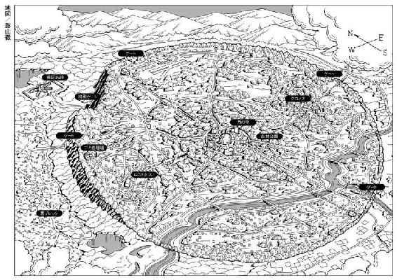

| NO.6 [ナンバーシックス] #07 | |
| あさのあつこ | |
| 講談社 (2012) | |
ebpaj-guide-1.0
ＮＯ．６
〔ナンバーシックス〕
＃７
あさのあつこ
ＮＯ．６〔ナンバーシックス〕＃７

パパ、帰ってくるよね
当たり前でしょ
１ 最後の抱擁を
俺が永遠の憩いの場所と定めるところもここ以外にはない。
そして、この生に倦み果てた肉体から、
不運な星の軛を断ち切ってしまいたい。
ああ、俺の眼よ、最後の一瞥を投ずるがよい。俺の腕よ、最後の抱擁を楽しむがよい。
（ロミオとジューリエット 第五幕 第三場 平井正穂 訳 岩波文庫）
白い光が眼を射た。
眩しい。
圧倒するような光。
光が溢れ、輝く。
そこはまぎれもなく、ＮＯ．６の世界だった。
そうだ、ＮＯ．６はいつもそうだった。光に満ち、光を放つ。
帰ってきた。
紫苑は強く、こぶしを握りこんだ。
背中を叩かれる。
「深呼吸しろ」
ネズミが言った。
「息といっしょに感情を捨てろ。一瞬の戸惑いや興奮が命取りになる。冷静に動け」
「わかった。きみこそ、遅れずについてこい」
ふいに笑いが込み上げてきた。胸がくすぐったくなるような笑い。
「なんだ？」
ネズミが顎を引く。
「何を笑ってる？」
「いや、きみに『ついてこい』って言えるなんて、最高だなと思ったんだ。ずっと、言われる側だったから」
「......紫苑、あんたな」
何か言いかけた口を閉じ、ネズミはかぶりを振った。
ドアが開ききる。
光がぶつかってくる。
「行こう、ネズミ」
こぶしを緩め、紫苑は白い光の中に滑り出ていった。
笑った？
ネズミはかぶりを振り、唇を嚙んだ。ほんの少しだが、息苦しい。
なんで、今、笑える？
しかも、心底、愉快そうに。
虚勢ではない。偽りでもない。矯正施設の内部へ踏み込もうとする直前で、紫苑は笑ったのだ。笑うことができた。
きみに『ついてこい』って言えるなんて、最高だなと思ったんだ。
なんだ、それは？ 学生の暢気なおしゃべりか？ おれたちは道を歩きながら談笑しているのかよ。なんで......あんたって人間は、なんで、そこまで緊張感がないんだ。自分が今どういう状況なのか、把握できないのか。
いくらでも悪態をつくことはできる。しかし、と、ネズミは呟く。
しかし、すごい。
悪態をつくより前に感嘆してしまう。
おれは笑えない。屈託なく笑うなんて、とうてい無理だ。地雷原に等しい危険地帯へ踏み出そうとする今、笑う余裕など、どこにもない。
恐怖はない。怯んでもいない。ただ、緊張はしている。それは、戦いに挑むための構えだった。襲いかかる敵から身を翻すために、身を翻しながら相手の喉元に牙をたてるために、必要な心身の動きだ。紫苑にはそれが、まったくなかった。戦うという意識すらない。
あんたは、牙も爪もどこに忘れてきたんだと、苛立ったことが幾度もあった。どうしようもなく苛立ち、紫苑の頰を張ったことさえあったではないか。
紫苑を孱弱だと思っていた。自分よりずっと弱く、脆い。孵ったばかりの雛に似て無防備で無力で......こいつは過酷な現実を生き抜く術を、何一つ会得していないのだ、と。だからといって紫苑を軽蔑したことなど、見下したことなど一度もなかったはずだ。
むしろ......、そう、むしろ守らねばと思ったのだ。全力で守らねば、紫苑は生き延びられない。潰されてしまう。本気で信じていたときがあった。
とんでもない思い違いだった。おれは、見当違いの愚かな誤りを犯している。
そう気がついたのは、もう、ずっと前だ。
紫苑は少しも弱くない。弱くないからこそ、ここまで来られた。潰されるどころじゃない。堂々と生き延びた。自分の力で這い上がってきた。惨すぎる現実を潜り抜け、この場に立ち、さらに笑ったではないか。
笑う、か。そうだな。あんたはあんたのままで、おれはおれらしく、突破する。
気息を整える。
ここからだぞ、紫苑。
ここから先、何が起こるのか。何が待っているのか。僅かも予測できないのだ。
奈落か？
奇跡か？
生還か不帰か？
一歩先は読めない。
何が起こるのか......。
ゴールに走りこんだとき、あんたは笑っているだろうか。あんたのままで、今と変わらず笑っていられるのだろうか。
「行こう、ネズミ」
紫苑が白い光の中に滑り出る。
遅れないよう、ついていかねばならない。
ネズミは頷くと、紫苑を追って光へと進み出た。
ポイントＸ。
図面上にはそう記されていた。ｐｏ１‐ｚ２２の位置にあるドアのことだ。地下の空白部分と地上部分が接している唯一の点でもある。
ドアが開くことによって、地下世界と矯正施設に通路ができた。気圧に差があるのか、風が流れる。
紫苑は右に走った。
脳裏に富良の書き込んでくれた図面が浮かぶ。目の前に実体があるかのように浮かび上がる。
「右に十五歩。そこまでは安全だ。センサーはついていない。その先は階段だ」
「階段には？」
「二段目から四十五度の角度で一本、踊り場に床上十五センチ水平に一本、十一段目にも六十度でビームが通っている。そこに触れない限り監視カメラは作動しない」
「ふーん、比較的、緩いな」
「ここまではな」
ここは矯正施設の地下階。主に倉庫と資料室が並んでいる。ポイントＸを除けば、外部と接触している部分は僅かもない。当然のことながら、窓もドアも何一つ設置されてはいなかった。正規のルート──矯正施設の従業員、職員、あるいは訪問者として認証チップを手に入れセンサーを気にすることなく、階段およびエレベーターを使用して降りてくる──以外は、あの地下世界を通るより他にここに到る道はないのだ。
機密上重要なセクションもなく、侵入される危険性もほぼゼロに近いとなれば、警護も緩くなる。
ポイントＸ、ｐｏ１‐ｚ２２が開くなどと誰も予想していなかったのだろう。
「ネズミ」
「うん？」
「ぼくたちの持ち時間はどれくらいだと思う」
「一分、いや二分はある」
二分、そんなにもつだろうか？
ポイントＸの異変はすでに、矯正施設のセキュリティシステム上に現れているだろう。管理担当者が気づき、然るべき手を打つまで二分も稼げるか？
「イヌカシが上手く動いてくれている。上はちょっとした騒ぎになっているはずだ」
「ちょっとした騒ぎ？」
「直にわかるさ。楽しいお祭りが始まっているってな。ともかく、たっぷり二分。おれたちは手に入れている」
「二分か」
「永遠に近い時間さ」
「まったく」
二段目四十五度、踊り場床上十五センチ水平、十一段目六十度。
階段を昇りきる。駆け上がるわけにはいかない分、時間は使う。残り時間約一分〇六秒。
この階からが、矯正施設の地上部になる。
エントランスホールがあり、人の出入りが一番頻繁に行われる場所だ。囚人たちとは別のゲートを潜り、職員たちがこの階に集まる。それから、個々の職場に散っていくのだ。玄関口では、出入りする者の徹底した照合が行われるが、一旦、入ってしまえば、まだ比較的検閲機能は緩いフロアのようだ。階が上がるにつれて、それが厳重になっていく。
目指すのは最上階。
幾重にもセキュリティシステムに取り巻かれた矯正施設の最深部分だった。本塔から突起のように延びた囚人の収監施設ではない。
矯正施設の最深部。沙布はそこにいる。
紫苑は確信していた。
沙布はエリートと認定された人間だ。選ばれし者たちには、幼児期から最高の教育環境を整える。金も時間も労力も潤沢に投資してのエリート育成はＮＯ．６の根幹政策の一つでもあった。
そうやって育て上げたエリートを単なる囚人として収監するなど、考えられない。自分との繫がりで逮捕されたのなら、母の火藍も無事ではいられなかったはずだ。
火藍ではなく沙布だった。
それは、紫苑自身に繫がるが故ではなく、沙布自身の条件によったということだろう。エリートであること、肉親がいないこと、あるいは女性であることも......。
「サンプルの収集状況。保健衛生局のデータに確かそんな項目があったと......」
富良は言った。
サンプル。見本。標本。
ＮＯ．６は都市内で標本抽出、サンプリングを行っているのだ。おそらく、秘密裏に。市民は気づかぬまま、サンプルとして抽出されている。それは、都市内から伝わってくる変事のざわめきと無関係ではあるまい。
それもまた、紫苑の確信だった。
沙布が諸条件を満たすサンプルだとしたら、貴重だ。貴重種サンプルを取り扱うのなら、それ相応の設備がいるだろう。
だから、最上階、最深部にある特別セクション、沙布はそこにいるはずだ。百パーセントではないが、かなりの確率で。
悪寒がする。
ＮＯ．６にではなく、自分自身に対して。
自分なら貴重種サンプルをどう取り扱うか。
冷静に考慮している自分自身に寒気を覚えるのだ。沙布を貴重種サンプルだと位置づける思考に鳥肌がたつ。
冷静は必要だ。危機にあって最も必要な心の在り方だろう。
乱れるな。惑わされるな。見失うな。
ネズミに教えられてもきた。
そして、冷静であることは、滾る想いを抑えることでもある。人としての波立つ感情を胸に秘めながら、それをぎりぎりで制御する。そういうことなのだ。だからもし想いや感情が欠落してしまえば......ただ冷酷なだけの者となる。
ぼくは冷酷ではないのか。ぼくの中に冷え切った箇所があって、それを冷静と取り違えているのではないのか。
奥歯を嚙み締める。
乱れるな。惑わされるな。見失うな。そして、迷うな。
迷うときじゃない。
慌ただしい足音がした。二つ。一つはどたどたと重たげに、もう一つはやや軽やかに響く。
「何でこんなに、臭いんだ。たまらんぞ」
階上から、白衣の男が二人駆け下りてきた。二人ともハンカチで鼻を覆っている。やや肥満傾向の四十がらみの男と、まだ若い瘦せぎすの男だった。
手すりの陰にしゃがみ隠れる。
紫苑のすぐ目の前で男たちは立ち止まり、大きく息をついた。
「頭がくらくらする。なんだ、この臭いは」
中年の男がうなる。
「なんでも、清掃ロボが故障したらしいですよ。清掃どころか、ゴミを撒き散らかしてるとか聞きました」
若い男が答え、額の汗を拭く。中年男は本当に気分が悪いらしく、顔から血の気が引いていた。
「まったく、仕事どころじゃない。鼻がひん曲がる」
「たまんないですよね。やっぱり、あれですかね」
「あれ？」
「今日は『聖なる祝日』じゃないですか。そんな日に仕事なんかしてるから、罰があたったんですよ、きっと」
「しょうがないだろう。研究機関に勤務していると、暦どおりには休みなんてとれない。それにしても、罰があたるなんて、随分非科学的なことを言うじゃないか」
「そうですね......だけど、このごろ、ふっと思うことがあるんです」
「思う？ 何を？」
「もしかして......罰があたるんじゃないかって。ぼくたち、このままじゃ罰せられるんじゃないかって」
「は？ 我々を誰が罰せられるというんだ。おまえ、臭いのせいで思考回路がショートしたんじゃないのか。いいか、そんな非科学的なこと、思ったとしても口にするな。おまえ、研究者どころか市民として不適格の烙印を押されてしまうぞ」
若い男は肩をすくめ、黙り込んだ。
振り向きネズミに目配せをする。ほとんど同時にネズミは動いていた。目の前の男の腕をねじ上げ、喉元にナイフを当てる。紫苑も飛び出し、若い男の腕をねじった。
「なっ、なんだ......」
「動くな。声もたてるな。騒げば殺す」
ネズミの声は低く、重く、冷たかった。これは殺人者の声だ。相手の恐怖を搔き立て、抗いを封じる。
ネズミが天才的な役者であることを、改めて思い知らされた。
「おまえもだ」
若い男の耳に囁く。ネズミのように上手くはいかない。しかし、ネズミの声と銀色のナイフだけで、十分な効果があった。二人ともまったく、抗う素振りは見せない。意思を失った木偶のように突っ立っている。身体だけがかたかたと小刻みに震えていた。
「右のドアへ。胸のネームプレートをセンサーにかざして」
ネズミは頷き、腕をねじ上げたまま男をドアの前に立たせた。ドアの上部に埋め込まれたセンサーが作動し、点滅する。
ドアは音もなく横に動いた。
「ロッカールームか」
「そうだ」
「なるほど、オジサマ方を隠すにはうってつけの場所だ」
言い終わらないうちに、ネズミの身体が軽やかに翻る。こぶしが男の腹部にめり込んでいた。紫苑は若い男の身体を押した。たたらを踏んだ男の首にネズミの手刀が振り下ろされる。瞬きする間の出来事だった。
二人の男は、声もあげず床にくずおれる。
白衣をはぎとり、ロッカーに押しこむ。まるで、追いはぎだな。ちらりと思う。罪悪感も違和感もわいてこない。一足でも上に、一歩でも前に。為すべきことは、それだけだ。白衣に腕を通す。
「どうだ？」
白衣を着込んだネズミが身体を回す。
「似合うよ」
「そりゃあどうも。上等の舞台衣装だ。サイズが少しでかいけどな。で？ このネームプレートが認証チップになってるわけだな」
「うん。ドアが開いたってことは、間違いないと思う」
いくらＮＯ．６とはいえ、施設で働く職員一人一人にチップを埋め込むまではしないだろう。生身に埋め込めば、回収が極めて困難になる。そこまでやるとしたら、回収する必要のない者たち、まず囚人、そして最高機密に触れられる人間、自分の意志で最上階に行くことの可能な者だけではないのか。
その他の職員は取り外しでき、かつ、個別認識の容易な物を認証ツールとして使っているはずだ。
読みは当たった。
これで行けるところまで、行く。
ネズミと目を合わせる。灰色の瞳の中に、どんな感情も揺れてはいない。なんだか、安堵する。どんな状況におかれても、揺るがない瞳が傍らにある。それは、紫苑にとって強固な支柱となってきた。ずっと支えられてきた。
ロッカーを閉める。
違うぞ、紫苑。ここからは、おまえ自身が切り開くしかないんだ。艫ではなく舳となる。
廊下に出る。異臭が漂っていた。腐敗した生ゴミの臭いに近い。
「おいおい、何事だ。この臭いは」
「建物中に臭いが回ってるぞ」
「目眩がするわ。吐きそう」
人々がハンカチや手で口元を覆いながら、廊下に飛び出し、あるいは階段を駆け下りてくる。真っ青な顔色をしている者も、額に脂汗を浮かべている者も、涙ぐんでいる者さえいた。
紫苑は眉を顰めた。臭いにではなく、人々の騒ぎに、だ。
たしかに異臭には違いないが、大騒ぎするほどのものだろうか。
西ブロックの市場、あそこに漂っていた臭いはこんなものじゃなかった。もっと濃厚で、もっと生々しい悪臭だった。その中で、誰もが生きていた。怒り、罵り、酒を飲み、ときに笑い、泣いていた。日々を暮らしていたのだ。
この程度で......。
「免疫がないからな」
紫苑の胸の内を感知したのか、ネズミが呟く。
免疫がない。ああ、確かにそうだな。
殺菌、消臭、温度調節、湿度調整、人工的に快適な環境を作りあげることは、不快なものを全て排除することにつながる。塵芥、汚物、細菌、ウィルス、異臭、悪臭、騒音、全てを排除、消滅させることでＮＯ．６は理想都市、聖都市と称されてきた。
基準値という枠がある。ＮＯ．６は己の定めた枠からはみ出すものを決して寛容しなかった。
臭いや音、細菌だけではない。人間をも排斥する。容赦なく斬り捨てる。この矯正施設にいる囚人たちの大部分は真の意味での罪人ではなく、聖都市の枠からはみ出してしまった人たちなのだ。市へ、忠誠を誓わなかった。異議申し立てをした。従わなかった。疑問を抱いた。それを罪として咎められ、収監された人たちが大勢いるはずだ。残りは貧しさ故に、飢え故に罪を犯した人々。そして、地下には西ブロックの住人たちが呻いている。
一切の例外もなく異物を排斥する。
それがＮＯ．６の世界だ。
その結果の一端がこれだった。
僅かな臭いに敏感に反応しパニックを起こす。都市同様に住人の肉体もまた寛容度が極めて低くなっている証だ。
何と脆弱なことか。
ネズミはこの脆さを察知していたのだろうか。僅かな、取るに足らない罅割れ。しかし、見落としてしまうほどのささいな罅が崩落のきっかけを作る。
この脆弱、この耐性の欠落が、ＮＯ．６の致命傷ともなるのだと。
そこまで見通しているのだろうか。
わからない。
ネズミのことは、まるでわからない。その生い立ちが、その過去が少しずつ見えてきたはずなのに......。
やはり、わからない。初めて出逢ったときと変わりなく、知りえぬままだ。
深い森のようだと思う。
分け入っても分け入っても、全貌が見渡せない。ここに花が群れ咲き、ここにたわわに果実がなっている。ここに泉が湧き、せせらぎが聞こえる。それは確かに目にした諸々ではあるけれど、奥深い森のほんの一部に過ぎない。鬱蒼とした木々の間を抜ければ、切り立った崖が現れるかもしれない。人を食らう獣が棲んでいるかもしれない。あるいは、まったく未知の風景が広がるかもしれない。わからないのだ。
分け入っても分け入っても、全てを晒してはくれない。分け入っただけさらに深くなっていく。
ぼくは果てのない森に迷い込み、彷徨っている。疼痛と甘美な想いを綯い交ぜにして、彷徨している。
白衣のポケットに綿製のハンカチが入っていた。それで、顔半分を覆う。臭いを防ぐためではない。顔を隠すためだ。こうしていれば、見咎められる危険性は低くなる。ネズミも白いハンカチを口元にあてがった。
階段を昇る。異臭が少しずつ濃くなってゆく。しかし、警報装置は作動しない。
チャイムが鳴る。思わず足が止まった。汗が一滴、こめかみを流れる。
「消臭作業を開始しています。空気清浄作業を開始しています。作動指数８・５。約二分十六秒で建物内の空気は正常範囲に戻ります。繰り返します。作動指数８・５。約二分十六秒で建物内の空気は正常範囲に戻ります」
女性のコントラルトを真似た人工声音が告げる。紫苑の傍らで小太りの男が息を吐いた。紫苑もハンカチの陰で吐息をもらす。
「やれやれ、助かった。まったく、拷問だな、この臭いは」
「二分もこのままなんて、耐えられないわ」
男の後ろでやはり小太りの女が顔を歪めている。肌が美しく、ぽってりとした唇の紅色が妙に艶っぽい。紫苑とネズミは黙したまま通り過ぎようとした。
「あっ、おい、きみたち」
声をかけられる。心臓が鼓動をうつ。
ドッドッ。ドッドッ。
動悸が苦しい。汗が噴出した。
ハンカチをあてたまま、ネズミが首をひねる。
「なんでしょう？」
「どこに行くんだ」
「職場に......戻ります」
「三階か？」
「ええ......三階です」
ネズミが軽く咳き込んだ。
「すごい臭いだぞ。まだ下のほうがマシだ。しばらく、退避していたほうがいいんじゃないのか。これじゃ、仕事にもならんだろう」
「......そうもいかないんです。急ぎの仕事なもので......」
「急ぎ？ 三階でか？」
「ええ......」
「しかし、三階は資料編纂と管理システム関連の階じゃないか。きみたち、三階のどのセクションに所属してるんだ」
「衛生管理部です」
紫苑が答えた。頭の中で図面をなぞる。
三階。電気系統の配線から、ここまでが普通階だと考えられる。四階以上の特殊階になると、配線は怖ろしいほど複雑に張り巡らされていた。囚人たちの監房棟と繫がっているのは四階。廊下には等間隔で遮断壁が設置され、センサーの設置場所も三倍以上の数にのぼっていた。
矯正施設で働く職員の大半は三階までしか昇れない、昇る必要がないのだ。その三階にどんなセクションが設けられていたか。脳裏に図面は鮮やかに浮かんでいた。衛生管理部は三階の奥まった一角にあったはずだ。
「この臭気の原因がまだ不明なもので......、衛生管理部としては、ちょっと慌てているんです。外から異物が混入したデータが出てこないので、建物内で異変があった可能性もあって......」
「え？ そうなのか。管理システム室の話だと、メンテナンスに不備があって清掃ロボが壊れ、ゴミを撒き散らしたということだったが、違うのか？」
「あ、それは、その......」
言葉に詰まる。ネズミが掠れた低い声で答えた。
「それだけにしては、臭いがきついので。ゴミの中に何が混じっていたか今、急ぎ調査中なんです。こういうこと、前例がないもので......ちょっともたもたしてしまって」
「ふーん。なるほどね。けど、あのセクションにきみたちみたいな若いのがいたっけ」
「それほど、若くもないですが......」
男は紫苑を覗うように首を伸ばした。
「きみ、その髪はどうしたんだ？ 真っ白じゃないか」
言葉に詰まる。髪の毛のことを忘れていた。透明に近い白い髪。ものすごく目立つはずだ。生まれつきだと言えば、今までそんな髪の職員はいなかったはずと怪しまれるだろう。
どうする？
「これは、その......脱色してみたんですが......」
「あら、すてき」
女が笑った。
「とっても、すてきだわ。きらきらしてきれい。どんな薬をつかったら、そういうふうになるの。あたしにも教えてよ」
「サラ。色目なんか使うなよ」
「まっ、色目ですって。失礼しちゃう。どうしてそういう言い方しかできないのかしら。ああ、臭いわ。この臭いにもあなたにもうんざりしちゃう」
女が足早に階段を下りていく。
「あっ、おいサラ、それどういう意味だ。おい、ちょっと待てったら、サラ。待てよ」
男が額の汗をぬぐいながら、女を追いかける。
「とんだ恋の空騒ぎだな。あの男、昼間から女を口説いてるらしいぜ。しかも職場で」
ネズミが肩を竦める。
「おかげで助かったけどな」
あれ以上つっこまれたら、危なかった。汗が冷えて、腋の下がひやりと冷たい。
「あんた、随分上手に噓がつけるようになったじゃないか。まだ、幾分詰めが甘いけど」
「きみの足元にも及ばない。もう少し精進する」
「いい心掛けだ」
三階は壁も床も白く、清潔だけれどのっぺりとした不気味さを感じさせた。
「管理システム室というのは？」
「左手。ガラス張りの部屋だ。ネズミ、真上に監視カメラ。顔を向けるな。気をつけろ。入ってすぐ右上の天井にも一台、全方向式のやつがある」
「了解」
消臭と清浄装置は効率よく働いているらしい。臭気はかなり薄れ、もうほとんど気にならない。混乱はおさまりつつあった。
ガラスの自動ドアが左右に開き、瘦せて顎のしゃくれた男が一人、バキュームをさげて出てきた。具合でも悪いのか、視線が虚ろで、ひどく顔色が悪い。
「やっちまった......とうとう、やっちまった」
すれ違ったとき、男の呟きが聞こえた。
「......やっちまったんだ......けど、ざまあみろだ......ざまあみろだ......」
「早く逃げろ」
男の背中に、ネズミがささやく。
男は足を止め、ネズミをちらりと見やった。
「何か言ったかね」
「逃げるんだ、ぐずぐずするな」
「あんたは......」
「実に見事な働きだった。ご苦労だったな」
それは臣下を労う王の口調だった。男の目が瞬く。喉仏がゆっくりと上下した。
「あんたは......だれだ」
「感謝している。うまく逃げろよ」
男に一瞬、艶やかな笑みを投げかけ、ネズミは管理システム室へゆっくりと足を踏み入れた。急いている様子はない。職場に戻る実直な職員そのものの足取りだ。
警報システムは作動しなかった。
まだ、いける。
紫苑はこぶしを握った。手のひらが汗ばんでいる。
思いのほか、上手く進んでいるじゃないか。この調子なら、何とかなるかもしれない。
いや、油断するな。僅かな緩みが命取りになる。
ネズミに倣い、紫苑も急ぐでもなく、用心するでもない、ごく当たり前の歩幅、速度で室内に入った。
中は広く、透明な強化プラスチックの壁で仕切られている。紫苑とネズミが足を踏み入れた空間、入り口に最も近い場所は無人だった。誰もいない。その向こうのブースにも人影は見えない。臭気に耐えかねて、逃げ出したのだろう。その臭いはほぼ払拭された。まもなく人が戻ってくる。
「ここは、空調設備の管理部署だな。それに」
「ポイントＸの開閉ボタンがある、だな」
ネズミの視線が制御盤の右端に注がれる。小さな丸いボタン。鮮やか過ぎて、安っぽいとも思える緑色だ。他のスイッチやタッチ式の画面に囲まれて、妙に場違いにも見える。
紫苑は制御盤の前に立った。
「そうだ。エントランスも含めて出入り口の管理、監視はこの壁の向こう側のはずだけど、ポイントＸのドアだけは、その監視からはずれているってわけだ」
「不思議か」
「いや、きみの言ったとおり、あれは開かずの扉なんだ。決して開くことはない。あのドアを開けて誰かがこちらに入ってくるなんて、ＮＯ．６はまったく想定していなかった。むろん、自分たちの側から開けることも。つまり、このボタンはほとんど意味のない存在なんだ。それなら、どこにあったって同じ。監視する必要などないからな」
しゃべりながら、制御盤中央の一際大きな画面に触れる。指紋を検出される危惧はあったけれど、生身の指でなければ作動しない。セキュリティ上、ロックがかかってしまうのだ。
「そのとおり。甘い話さ。慢心が生む甘さ。ＮＯ．６は自分たちを脅かすものなど、この世にないと思ってる。笑えるだろう」
ポイントＸのドアは、昔、老が地下世界──当時はまだ洞窟にすぎなかっただろうが──に収容されたころ作られた。あの地下洞窟そのものが監獄として使われていたのだ。矯正施設が今の形に近づくにつれて、新たな、より強固な収監施設ができあがる。地下洞窟も老も収容された人々も忘れ去られた。あるいは、存在しないものとして、捨てられたのだ。
ドアだけが残った。
画面が切り替わる。矯正施設内の空調設備の設計図。
「ネズミ、ここ」
四階から五階、さらに最上階に向けて階段が設置されている。
踏み面百二十ミリ、蹴上げ二百四十ミリ。
かなりの急勾配だ。幅も大人一人がかろうじて昇降できる数値でしかない。階段というより、梯子に近い。
ネズミがのぞきこむ。
「これは？」
「工事、修繕のための階段だ。ほとんどがコンピューター制御なのだろうが、ときに人の手が必要となる事態もある。それを想定してのことだろう。ほとんど使用されていないだろうけど」
微かな吐息がネズミの口から漏れた。
「こんなものが、こんなところにあったのかよ。あんた、端から、ここに階段があると知ってたのか」
「いや。推測だ。最初の図面を見たとき、微妙な空白部分だと思ったんだ」
「おれは気がつかなかったけど」
「壁の中なんだ。外壁と内壁の間の僅かな隙間。この部分だけが他よりやや広かった」
「おれが見逃してたことを、あんたはちゃんと捉えたってわけかよ」
「そういうこと」
チッ。舌打ちの音。
「それで、そこはおれたちを機嫌よく受け入れてくれるプレイランドなのか。侵入防止装置はついてないんだな」
「わからない。この画面には空調関連の設備だけしか出てこないんだ。他のことは......わからない」
「空白部分と言ったな。つまり何も書き込まれていなかったわけか」
「ああ」
「それこそ、ドアはどうなんだ？ 階段があるなら、そこに通じるドアもあるはずだろう」
「それもわからない。それらしきものは一切、書き込まれていなかった」
「それじゃ、動きようがない」
動きようがない。しかし、行くしかないだろう。中央階段もエレベーターも使えないとすれば、これが最上階に繫がるたった一つのルートとなる。
頭の芯が疼くほど図面を見続け、内部構造を記憶した。その結果として紫苑の導き出した結論だった。
このチップでは、これ以上は昇れない。どんな手段を使ってでもこの階段に足をかけるのだ。そこを一気に駆け上がることができれば......。最上階にはマザーコンピューターが設置されている。そこまで行くのだ。何としても辿り着く。
これしかない。
矯正施設は、いわばＮＯ．６の雛型だ。情報、活動、機能、管理、全てをマザーコンピューターに集約するようになっている。それは、一人の支配者、マザーコンピューターを自由に動かせる者唯一人に全権力が集まることでもあった。
王を頂点とする完璧なヒエラルキー。
それを創り上げようとしている。壮大なそして、愚かな野心だ。
人は機械を操ることはできる。装置を開発し、改良し、自由に使いこなすことはできる。しかし、人は人を支配することはできない。千年の歴史を誇る帝国であっても、千年の時の果てに滅びていった。人は人を支配できない。必ず破綻する。
紫苑はＮＯ．６の外で学んだ。内にいる者、ＮＯ．６に君臨する者は学ばぬままだったようだ。だから、幻想を抱く。
わたしが全てを支配する、と。
愚かだ。けれど、愚かだからこそつけ入る隙が生じる。マザーコンピューターに接触できさえすれば、沙布の居場所をつかみ、一時的でも矯正施設の機能を停止させることができる。
全てが一点に統一集中する中央集権型システムなら、迷いなく、その一点を攻めればいい。
ＮＯ．６の脆さはここにも露呈しているのだ。
指を動かす。画面が次々に切り替わる。
四階の遮断壁。あれを突破しなければならない。壁が壁として行く手を阻む前に空間を突き破る。
そのために......。
頭の中がしんと冷えてくる。指は動き続け、一つ、一つ、処理していく。
「おい、変だぞ」
隣接したブースで、男が叫んだ。すでに数人の職員が帰ってきている。
「ポイントＸに作動ランプが点灯している」
「ポイントＸ？」
「ｐｏ１‐ｚ２２の位置だ。ドアの開閉が記録されている」
長身の若い男が首を傾げた。
「ｐｏ１って......地下階じゃないですか。そんなところにドアなんてありましたっけ？ コンピューターの表記ミスじゃないのかな。臭気があんまりひどかったんで、コンピューターまでいかれちまった、なんてね。はは」
「つまらん冗談はやめろ」
一喝されて、若い男は口を閉じた。
「二分四十秒前。ついさっきだ。あの騒ぎの真っ最中に、ポイントＸのドアが開いた」
「そこが開いちゃいけないんですか。ドアがあるなら開くの、当たり前じゃないですか」
「通常設定のドアじゃない。非常口でもない。スタッフが出入りするドアじゃないんだ」
「へぇ、じゃあ、どこに出入りするためのドアなんです」
「知らん。聞いたこともない。ともかく、開くわけのないドアが開いた。これは......」
防音設定がオフになっているらしく、二人の会話はやや不鮮明ながら聞き取れる。
「タイムアップか」
ネズミが白衣のボタンを外した。紫苑も立ち上がる。
二分四十秒。予想よりはるかに長い時間だ。運にはまだ、見放されていないらしい。
「あっ、何だ。おまえら」
でっぷりと肥えた巨漢が前を塞ぐように立っていた。
「何をしている。誰なんだ」
ネズミが白衣を放った。男の頭上に被さる。男は両手をばたつかせ、よろめいた。その脚をネズミが払う。派手な音をたてて男は横転し、くぐもった呻きをあげた。
「失礼」
ネズミが男をまたぎ、廊下に出ていく。紫苑も同じように、男の身体を飛び越えた。
「なにごとだ」
「誰か、不審者だ、誰か」
「なんだって、非常ベルが鳴ったか」
背後がにわかに騒がしくなる。
「ネズミ、階段を駆け上がれ」
「了解」
センサーが侵入者を感知すれば、自動的に防御シャッターが下りる。下りきってしまうまでに、四階に到達できるか。
階段の照明が赤く変わる。特殊合金のシャッターが音もたてず、閉まっていく。
速い。
「紫苑、頭から突っ込め」
僅かな空隙にネズミと紫苑は飛び込んでいった。
２ 人間の心が
己の中の人間の心がすつかり消えて了へば、恐らく、その方が、己はしあはせになれるだらう。だのに、己の中の人間は、その事を、此の上なく恐しく感じてゐるのだ。ああ、全く、どんなに、恐しく、哀しく、切なく思つてゐるだらう！ 己が人間だつた記憶のなくなることを。
（山月記 中島敦 筑摩書房 中島敦全集第一巻）
覚醒してしまった。
沙布は覚醒し、全てを悟った。
自分の身に何がおこったか、理解してしまったのだ。
なんてことを、なんてことを......なんてことを。
「やれやれ、沙布、どうしたね。この感情の揺れは。いつまで、こんなに興奮しているんだ。困った子だねえ。せっかくの美しさが台無しになるよ。ふふふ、いやいや、今のは冗談だ。つまらない冗談だよ。気にしないでくれ。きみは美しい。実に美しい。大成功だよ。ここまではとても上手くいってるんだ。いや、これからだって失敗はありえないけどね。ふふふ」
沙布のすぐ傍らで男が笑っている。
悪魔。
あなたは悪魔だったのね。
なぜ、なぜ、わたしを......。
「きみは美しいだけじゃない。強靱でもある。まさに理想だ。ぼくにとっての理想なんだよ、沙布。正直に告白しよう。きみに噓はつけないからね。ぼくはね......最初は本当に単なるサンプルとして、きみを蒐集したんだ。他のサンプルと同じ扱いをしようとした。ああ、許してくれたまえ。頼むから、ぼくを責めないでほしい。知らなかったんだよ、きみがこんなに美しく強いなんてね。沙布、ぼくはきみに魅せられてしまった。百万回繰り返してもいい。きみこそがぼくの理想、求めていたものなんだ。だから、きみを女王にしてあげるよ。いや、女神に近い存在にしてあげる。完璧な存在だよ。嬉しいだろう。きみとぼくとで、この世界を支配する。どうだい？ すてきだろう」
悪魔。
あなたは悪魔。
近寄らないで。近寄らないで。
男に沙布の声は届かない。
男は憑かれたようにしゃべり続ける。頰を紅潮させ、やや前屈みになり歩き回る。
水槽の中の魚のようだ。ぐるりぐるり、ぐるりぐるり、閉じられた空間をただ泳ぎ回るだけ。ぐるりぐるり。ぐるりぐるり。
足音もたてず、男は歩き、しゃべり続けている。沙布にではなく、自分自身に語っているのかもしれない。
「ぼくはきみを手に入れた。最高の素材をね。ああ、沙布、ぼくはね運命論者じゃない。人間の力を超えた作用、天の命じる人生、そんなもの信じているわけじゃないんだ。むしろ、嘲笑ってきた。馬鹿馬鹿しいとね。だけど......笑わないでくれよ、沙布。ぼくはきみに出会って、その......運命というものを少し、ほんの少し信じるような心持ちになっている。そうなのかもしれない。もしかして、神というものがいて、ぼくに絶対的な力を与えようとしているのかもしれない。そうでなければ、こんなふうにきみに出会えたことが説明できないだろ。だから、ぼくがきみを女神にしてあげる。ぼくには、それだけの力があるんだ。ああ、そうだ。昨日、きみに名前はいらないって言ったんだったね。うん、そうだ、そうだ。以前の名前なんか捨ててしまうべきだ。女神に相応しい新たな名をつけよう」
男の足も舌も止まらない。
歩き続ける。しゃべり続ける。
「そう例えば......」
唐突に男の足がとまった。ゆっくりと笑みが広がっていく。
「例えば、エリウリアスとか、ね」
エリウリアス？
男はまた歩き始めた。幸せそうな笑みを浮かべたままだ。
「すてきな名前だろう。まさに、女王の名だ。そう、きみにこそ相応しい名前なのかもしれない」
この人は......。
沙布は男を凝視する。初めて、見つめてみる。
細面の一見、優しげな顔立ちだ。年齢は......よくわからない。光の具合によって、かなり若々しくも、ひどく老けているようにも映る。空を見据え、己の思いをしゃべり続ける男は、外界を遮断し自分の内なる世界に浸っている。
自己陶酔。
この人は、自分に溺れている。自分の能力を神に等しいと思い込んでいる。全てを託され、許された人間だと。だから......だから、こんなことができるのだ。
「もう少しなんだ。もう少しで、ぼくのプロジェクトは完成する。きみは、最後のピースだったんだ。きみのおかげで、全てのピースがそろった。完成したんだ。間違いはない。ただ時間がいる。もう少し、時間が必要なんだ。気分はどうだい？ ぼくは、きみに快適にすごしてほしい。そのためなら、どんなことでもするよ。きみは、今のぼくにとって最も大切なものの一つなんだからね」
わたしを......。
「なんだって？ 沙布、何か言ったかい？」
わたしを自由にして。わたしを元のわたしに戻して。わたしをあの人に逢わせて。
感情が昂ぶる。心の内で風が荒れ狂う。ゴゥゴゥと音をたてる。大声で叫びたかった。泣きたかった。
逢いたい。
「おや、どうしたんだい。数値がずいぶん、あがっているけれど。やっぱりまだ、今の環境に上手く適応できないんだね。うーん、もう少しすんなりいくと思っていたんだが......。あ、いや、きみを責めているわけじゃないんだ。きみを責めたりするものか。大切な宝だ。少し眠るかい？ そのほうがいいだろう。うん？ ......マザーもそう判断したようだ。安定剤を処方してくれるってさ。ああ、そうだ。マザーのこと、伝えなくてはいけなかった。きみとマザーは直接、繫がっているんだからね。きみの環境条件を最も快適に整えるために、きみにとって最高の環境になるように、常にマザーが管理してくれる。だから、ほら、今も休息が必要だと」
甲高いベルの音がした。男の眉尻が吊り上がる。
「なんだ......。まったく、こんなときに緊急連絡など、不粋な......ああ、ぼくだ。どうした？ 今日は『聖なる祝日』だろう、君は忙しいんじゃ......え？ なんだって。どういう意味だ......都市内でか？ 都市内でそんなことが......まさか、ありえないことだ......わかった、その映像を送ってくれ。それからサンプルもだ。回収したものを全て......ああ、これからすぐに......え？ すでに三十体？ 一日でか......そんなことが......わかった、もういい。ぼくがそちらに向かう......ああ、すぐにだ。すぐに」
男の横顔から血の気が引いていた。唇も色を失い、白く乾いている。その唇がわなわなと震えている。
「間違いだ。何かの間違いだ。そんなことが......起こるわけがない。起こるわけがないじゃないか」
一言を吐き捨てるように呟くと、男は出て行った。おかしいほどに狼狽している。さっきまでの余裕も饒舌もきれいに搔き消えてしまった。
都市内でそんなことが......。
男が言っていた。都市内、ＮＯ．６で何かが起こったのだろうか？ あの男の予想を超える何かが......。
ＮＯ．６。わたしの生まれ育った所。でも、あそこにはいつも不穏が蠢いていた。あんなに快適であんなに美しい場所なのに、何故かいつも危うくて......何かが起こりそうな気配が漂っていた......と思う......。
沙布は激情が少しずつ治まっていくのを感じた。
眠い。溶けてしまいそうなほど眠い。催眠剤を投与されたのだろうか。マザーに繫がっている？ あれはどういう意味だろう。マザー......ああ、眠い。
意識が曖昧になってくる。思考ができなくなる。そういうとき、必ず浮かんでくる姿があった。
紫苑。
その名前を呼んでみる。紫苑が微笑み、微かにうなずいた。幻想なんかじゃない。本当に、すぐ目の前に立っているかのごとく鮮やかで、生々しいではないか。
ねえ、紫苑、あれはいつのことだったかしら。夕暮れだったよね。風が少し寒かったっけ？ 前の日に初雪が降って、道が濡れていたわ。わたしたち並んで歩いていたの。覚えている？ 忘れていない？
わたし、あなたの名前を呼んだよね。
紫苑。
もう一度、名前を呼ぶ。紫苑はやはり微笑んでくれた。
「どうしたんだ、沙布？」
「ううん......ちょっと」
「ちょっと？」
「呼んでみたかっただけよ。よーく考えたら、紫苑って良い名前だなって思ったの。花の名前なんだもの」
「よーく考えないと思わなかったのか？」
「ふふっ。ねえ、紫苑ってどんな花なの？」
「えっと......確か、キク科の多年草だったな。茎は一・五メートル前後にまで伸びて、淡紫色の頭状花をつけるとかで......」
「紫苑。わたしは、花についての解説を知りたいわけじゃないの。そんな情報なら、簡単に手に入れられるわ」
「じゃあ、何を知りたいんだよ」
「簡単に手に入らないことよ」
「簡単に手に入らない......うーん、謎掛けみたいだな。紫苑についての情報でないとしたら......やっぱりわかんないや。どんなことを知りたいんだよ、沙布」
あなたのことよ、紫苑。
わたしはあなたを知りたかった。誰がつけた名前なの？ 気に入ってる？ わたしが初めて、あなたの名前を呼んだのはいつだったかしらね。そして、あなたがわたしを呼んでくれたのは......。
紫苑、わたしはまだ、あなたのことを何も知らないわ。
あなたの癖、あなたの好きな食べ物、あなたのしゃべり方、あなたの優しさと強さ......ええ、知ってるわ。とても、よく知っている。だけど、紫苑......。
あなたは誰を追いかけていたの？ 誰の傍らにいることを望んだの？ 誰にそこまで焦がれているの？ あなたの伸ばした指先に、立っているのは誰？ わたしではだめだったの？ その人でなければならなかったの？ わたしは何も知らない。だから、教えて。教えてほしかったのよ、紫苑。
紫苑。
沙布。
声が聞こえた。朦朧とした意識の中で火花が散る。緋色の花が花弁を開く。靄が風に散らされ、眼前に風景が現れるように、沙布の意識は沙布のもとに戻ってきた。声が呼び戻してくれた。
沙布。
誰？ 誰がわたしを呼んだの？
紫苑のものではなかった。亡くなった祖母のものでも、父や母の声でもなかった。今まで一度も耳にしたことのない声、いや音？ 旋律？ 梢を渡る風、せせらぎ、地を叩く雨......似ている。でも、違う。今まで一度も耳にしたことのないもの。
これは歌かしら......とても美しい歌のような......。
沙布。
誰？ 誰がわたしを呼んでいるの？
わたしよ、沙布。
誰？ あなたは誰？
わたしはエリウリアス。
エリウリアス......。
「シオン、そんなに暴れるんじゃねえよ」
イヌカシは湯をはった大型の鍋に赤ん坊をつけながら、軽く舌を鳴らした。
赤ん坊が笑う。キャッキャッと機嫌のいい笑い声をあげて、手足をばたつかせる。湯が散って、上着の裾を濡らした。
「喜ぶなって。しかし、おまえ、ほんとに丸々してるよな」
赤ん坊の手も足も腹も、身体全部がぷっくらと柔らかい。指の先、髪の一本一本まで、生きる力に満ちている。
不思議なやつだ。おれの知っている赤ん坊とは、まるで違う。違いすぎて面食らうぐらい、違う。
イヌカシの知っている赤ん坊というのは、いつだって死神が足元にうずくまっていて、なす術もないまま命を刈り取られる。そんな連中だった。栄養失調、疫病、凍てつく大気、ゴミ溜めと大差ない寝床。西ブロックに生まれた赤ん坊が五歳まで生き残れる確率はどの程度だ。五十パーセント、いや三十ないかもしれない。生まれてすぐ、口減らしのために親に殺される子だっている。死ぬために生まれてきた。そうとしか思えない赤ん坊がうようよいるのだ。一時、赤ん坊を埋葬する仕事を請け負っていた。埋葬といっても、穴を掘って埋めるだけだ。犬の墓と変わらない。父親の哀惜や母親の悲嘆で送られる子はまだ幸せだと、そのとき思った。見送る者がイヌカシ一人だったことも珍しくないのだ。土を盛り、石を載せただけの墓の前で、祈りをささげるどころか、誰も花一本、手向けようとはしない。やがて、墓であったことさえ忘れられる。
赤ん坊は、たいていぽかりと目を開けたまま死んでいった。閉じきらなかったまぶたの奥から、驚くほど澄んだ瞳がこちらを見ていたりする。
そりゃあそうさ、自分の足で立つこともできなかったんだ。穢れようがない。無垢のままに決まっている。
小さな骸に土を被せながら、胸が痛んだことは一度もない。憐憫の情を覚えたことも、涙を零したこともない。
早く死ねて、よかったじゃないか。おまえは運がいい。これ以上、苦しまないですんだんだからな。
そう語りかけるだけだ。
おい、チビスケ、おまえは何ヵ月生きた？ 二ヵ月か、三ヵ月か。半年、もったのか？ もう十分だろう。二度と、生まれ変わろうなんて思うなよ。また、同じ運命になるだけだ。どうしてもと言うのなら、道端の草か犬の仔に生まれ変わってこい。そのほうが、百倍も幸せってもんだ。いいな、間違っても人間なんぞに生まれてくるんじゃねえぞ。
そうも語りかける。語りかけながら骸を埋めていくのだ。
イヌカシなりの死者への餞だ。
ネズミなら歌うだろう。無垢なまま逝った魂を送る歌を──そんなものがあるのかどうか知らないけれど──あいつなら歌うだろう。だけどなネズミ、死んだ者に歌などいらない。死にかけたやつには必要かもしれないがな。
死者はみな大地に還り、土塊になる。赤ん坊も、おまえも、そしておれも。
ネズミのことをぼんやりと考えていた自分に気がつき、イヌカシは慌ててかぶりを振った。左手の中指と人差し指を交叉させる。魔除けの呪いだ。
イヌカシにとって、ネズミは魔に近い。死神なんかより、ずっと質の悪い存在だ。
死神はこちらが用心さえ怠らなければ、ある程度防げる。追っ払うことも、ごまかすこともできた。しかし、あいつときたら、どうだ？ 平気で他人を窮地に追い込む。危険に巻き込む。こっちの都合や事情なんてお構いなしだぜ。利用できるものは、犬の糞だって利用しようって魂胆だ。狡猾で、抜け目なく、簡単に他人を手玉にとっちまう。ああ、嫌だ、嫌だ。ネズミに歌うたいの力さえなけりゃ、絶対、関わりあったりしなかったんだ。絶対にだ。あ......いけねえ、また考えてる。あんなやつのことをちらっとでも考えちゃいけないんだ。魔に魅入られちまう。わかってんのに......おれの頭はどうなってんだ。
「ほら、シオン。おまえも呪いをしておけ。魔に魅入られないようにな。おまえのパパみたいに、虜になっちまったら、お手上げだからよ。ほら、こうして指を合わせてみろよ」
「ぶぶぅ、ぶぶっ」
湯の中で、シオンが楽しげな声をあげる。
不思議な、ほんとうに不思議な赤ん坊だ。
死神をまったく寄せ付けない。
廃墟のホテルの一室、壁は崩れ、窓ガラスは破れ、寒風が吹き込む。外よりは幾分マシといった程度の場所だ。ミルクだって、力河が何とか調達はしてくれているが、まるで足りない。足りない分は犬の乳や野菜の煮汁で補っている。
西ブロックの他の赤ん坊に比べれば恵まれたほうではあるだろうが、劣悪なことに変わりはない。
なのに、シオンはいつも機嫌よく、手足を動かし、笑い、ぶぅぶぅとイヌカシに話しかけてくる。肌の色艶はよく、むっちりと肥えて、元気がいい。心なしか、ここ二、三日で大きくなったようにさえ見受けられる。
瞳には生気が満ち、肌は滑らかで、声には張りがある。まるで透明なシールドに囲われて、この世のあらゆる危険や害毒から守られているようだ。
不思議な赤ん坊だ。
「おい、イヌカシ」
だみ声に呼ばれる。濁った野太い声。
まったく、顔つきは無理でも、せめて声ぐらい、もう少し上品になれないもんかね。
「なにやってんだ。やめろ」
荒い足音がして、イヌカシの腕からシオンが取り上げられた。鍋が揺れ、湯が零れる。
「なにすんだよう」
「ふざけるな、やめろ」
力河が裸の赤ん坊を抱きしめ、後ずさりする。
「イヌカシ......いくらなんでも、やりすぎだ。人間のやるこっちゃないぞ」
「は？」
「恥ずかしくないのか。確かに、おまえは人間より犬にちかい。だからって、理性がないわけじゃないだろうが」
「理性？ 何の役にもたたねえ代物だな。けどまあ、おっさんより少し多めには持ってるかもね、おれ」
酒焼けした顔を歪め、力河はさらに一歩、足を引いた。
なにやってんだよ、このおっさん？
「いくら犬小僧だって、もう少し、マシなやつだと思ってたぞ。イヌカシ、どれだけ腹が減ってたかしらんが、赤ん坊を食おうなんて、おまえは鬼か。人の心を捨てたのか」
「はぁ？ なんのこっちゃ？」
「とぼけるな。おまえ......シオンを茹でて食おうとしてたじゃないか」
イヌカシは力河をしばらく見つめた。瞬きもしなかった。笑いがこみ上げてくる。胸の奥から突き上げてくる。
「なにがおかしいんだ。このヒトデナシ」
身体を折り曲げ、しばらく笑った後、イヌカシは手の甲で口元を拭いた。
「あんまり笑いすぎて、よだれが垂れちまったよ。ああ、おっさん。惜しかったな。もう三十分遅くくれば、赤ん坊で出汁をとった美味いスープをたらふく、食わせてやったのに」
「だっ、誰が、そんなもの食うか。飢え死にしたっていらん。だいたいおまえはな」
「風呂だ」
「え？」
「シオンを風呂に入れてたんだ」
「鍋でか？」
「そうだよ。犬の餌を作るのに使ってる鍋だ。赤ん坊の風呂には、これが一番、手ごろなんだよ。もちろん、おっさんが上等の赤ん坊用バスタブを届けてくれるんだったら、喜んでそっちを使わせてもらうけど」
「う......いや、それは......」
イヌカシは大仰な仕草で肩を竦めてみせた。
「それにしても、おっさんがそこまでシオンのことを心配しているなんて、おれはびっくりだね。おっさんが優しいのは金と酒と若い女だけかと思ってた。いやあ、意外だ」
「当たり前だろうが。おれは、おまえたちとは違う。ちゃんと、まともな人間の心ってものが残ってんだ。いっしょにするなよ」
「おまえたちって、おれも入ってるわけ？」
「おまえとイヴだ。決まってんだろう」
もう一度、肩を竦める。
「わかったよ。そこまで言うなら引き取ってくれ」
「は？」
「あんたが抱いている赤ん坊をそのまま懐に入れて連れて帰ってくれよ。優しいオジサンに育てられて、さぞかしりっぱな男になるだろうよ。あんたの大好きな天然ぼけの紫苑みたいにな」
力河がふるふると頭を振った。
「いや、困る。そりゃあ無理だ。イヌカシ、悪かった。おまえはヒトデナシなんかじゃない。イヴなんかと、あんな性悪狐といっしょにして悪かったな。謝る。謝る。おれはどうかしてたんだ。ははは......そうか、風呂か、赤ん坊は風呂が大好きだからな。よかったなあシオン、おまえは良い人に拾われたなあ。運がいいぞ」
力河がシオンに頰擦りする。とたん、シオンが泣き出した。大きな口を開けて、手足をつっぱる。テーブルの下で眠っていた老犬が、顔を上げ、いぶかしむように目を細めた。
「あっ、おい、そんなに泣くな。暴れるなって、落っことしてしまうじゃないか......」
赤ん坊は泣き止まない。泣きながらイヌカシに向かって手を差し出す。反射的に抱き取っていた。小さな身体を両手でしっかり包み込む。ぴたりと泣き声が止んだ。
「まったく、冷えちまうじゃねえか。風邪ひいたらおっさんのせいだからな、治療費払ってもらうぞ。シオン、寒かったな。もう一度、湯につけてやるから、あったまれ」
ぷっくりとした腕が伸び、指がイヌカシの頰に触れた。
「ママ」
滑らかな頰の上に涙の名残が印されている。
「ママ」
胸がしめつけられる気がした。身体の奥の奥で、うねるものがある。熱く、大きく、うねる感情にイヌカシは一瞬、呼吸を止めた。
「ママ」
あぁ、わかってる、シオン。冗談だ。つまらない、そしてくだらない冗談だったな。かんべんしてくれ。だいじょうぶ、おれはここにいる。おまえをこんな呑べえに......いや、誰にも渡したりしない。誓う。本気で誓うから。
力河がイヌカシの腕の中を覗き込み、酒臭い息を吐いた。
「ママ、だとよ」
「なんだ？ おっさん、ママに会いたいのか？」
「おれのおふくろは、とっくに墓石の下だ。おれが十の歳にもぐりこんでから一度も、這い出してこない」
「そりゃあどうも、よっぽど居心地がいいんだな。まっ、おふくろさんとしちゃあ、息子のここまで堕落した姿なんて、見たくはねえだろうからさ。あえて出てこないんじゃないの」
「誰が堕落してるって......そんなことより、シオンだ」
「シオンがどうかしたかい？」
「おまえのことをママって呼んだぞ」
「そうかい」
「なんで、ママなんだ」
「さあ」
「ママ」
「ほら、また言った」
シオンを湯につけ、温める。心地よいのだろう、シオンがゆるりと微笑んだ。美しいもの、清しいもの、心躍るもの、全てを照らし出す笑顔だ。
赤ん坊って、こんなに貴いものなのか。
「なんでママなんだ。イヌカシ」
「赤ん坊は、何でもママなんだよ。信じられないけど、あんただって何十年前には、ママ、ママって泣いてたんだ。そのころから、金貨を見せたら泣き止んでたのかね」
「おまえに言われたかないね。金に執着してるのはお互いさま。どっこいどっこいだぜ」
「へっ、うるせえよ」
こんなに貴いものなのか。知らなかった。
自分が凍てついた、あるいは日に晒され乾ききった、あるいは長雨にぬかるんだ大地に、何の感慨もなく埋葬してきた赤ん坊たち。その一人一人に初めて心を馳せてみる。
シオンだけじゃなく、あの子も、あの子も、あの子も貴い存在だったのだろうか。だとしたら......あんなふうに死んでいくのはおかしい......変だ。やせ細り、皮膚に皺が寄り老婆と見紛う形相で死んでいくなんて、無垢な瞳のまま誰を怨むでなく、怨むことさえ知らぬまま息絶えていくなんて、おかしい。おれがスイカズラの根元に埋めたあの子も、赤土の墓穴を掘ったあの子も、襤褸布に包んでやったあの子も、あの子も、あの子も、あの子も、もっと貴ばれなくちゃならなかったんだ。あんな死に方を強いられちゃいけなかったんだ。
シオン。おまえは死ぬな。生き残れ。生きて、大きくなれ。人を怨むことも貴ぶことも覚えていくんだ。
「まぅまぅ」
赤ん坊を抱き上げ、手早く服を着せる。出番を待っていたかのように黒毛の雌犬が綿のはみ出たマットの上に横たわる。市場の瓦礫の中からイヌカシが見つけてきた物だ。色褪せて、あちこちがほつれ、襤褸屑同然になっているが、よく目を凝らすと、愛らしいヒヨコの模様がついている。もしかしたら、シオンと同じような赤ん坊が使っていたのかもしれない。あの『人狩り』の日、この上で寝かしつけられ夢を見ていたのかもしれない。
「頼むぞ」
犬の傍らに転がすと、シオンはすぐに乳房に吸い付いた。うぐうぐと喉を鳴らし、乳を吸う。
「随分、毛深い乳母だな」
「毛深い女ならここにはいくらでもいる。黒毛、赤毛、白毛、ブチ。お好みの女と一晩、すごしてみるか」
力河はイヌカシの揶揄を無視し、ため息をついた。
「人間が犬の乳で育つなんて......まぁたいしたもんだ。しかし、だいじょうぶなのか？ まさか、わんわんなんて吼えるようになるんじゃないだろうな」
「今、ママって言ったじゃねえかよ」
力河はシオンを見下ろしたまま、もう一度、ため息をついた。
「おっさん」
「なんだ」
「準備できたのか」
力河の顔がゆっくりとイヌカシに向けられる。
「ああ」
緩慢な動作で腕をあげ、テーブルの上の黒いバッグを指さした。
「そっか。じゃあ行こう」
バッグを持ち上げる。ずしりと重い。力河は眉を顰め、渋面を作った。
「イヌカシ......止めないか」
「止める？」
「もう、こんなことお終いにしようや」
「お終いにして、どうするんだ？」
「このまま、お互いのねぐらにもぐりこんでおとなしくしとくんだ。そのほうがいいと......思わないか？」
「思うさ」
思うさ、おっさん。あんたの百倍も強く思っている。こんなことお終いにして、ねぐらにもぐりこみたいってな。
今夜も冷える。だけど凍てつくほどじゃない。犬といっしょなら十分凌げる寒さだ。さっき、湿気たビスケットと野菜屑のスープを腹に入れた。うまかった。おれは、今、そこそこ満たされてるってわけだ。このまま、犬といっしょに寝転んでぐっすり眠りこけられるのなら......。
すてきだ。
「なっ、そうしよう。おまえにはシオンがいる。この子を守らなくちゃならない。おまえにもしものことがあったら、シオンはどうなるんだ。考えてみろよ」
「犬がいる。おれがいなくても犬がちゃんと育ててくれる。おふくろがおれを育ててくれたようにな」
「いや、けど......、イヌカシ、正直に告白するけどな、おれだって命は惜しい。危険なことはやりたくないんだ。だから......手を引こう。お終いにしようや」
「ネズミと紫苑はどうする？ 見捨てるのか？」
「あの二人はもう死んでる。生きているわけがない。『人狩り』で狩られた時点で生きているわけがないんだ。そんなこたぁ、おまえだって百も二百も承知だろうが。だから、こんなこと無駄なんだ。おれたちは無駄なことに命を懸けようとしている。なっ、止めよう。そのほうがいい」
「おっさん」
イヌカシの目つきに力河が顎を引く。
「......なんだよ」
「ぐだぐだしゃべるのは、そこまでだ。そろそろ時間だ、行こうぜ」
「イヌカシ！」
「おれは行く。おっさんが止めたいなら、止めればいい。別にかまわないぜ。ただ、このバッグだけは頂いとくからな」
「イヌカシ、なんでだ。なんで、そこまであの二人に義理立てする。おまえはずっと一匹で生きてきたじゃないか。おれだって、そうだ。紫苑はともかく、イヴみたいなやつのために、こんなことを......」
「仲間だからな」
「はぁ？」
「あいつたちは仲間だ。見捨てるわけにはいかない」
力河の黒目がうろつく。口元が歪む。とびきり苦い薬草を口の中に突っ込まれたかのようだ。湿疹のできている顎の先をがりがりと搔き毟る。
「笑う気にもならん冗談だな。あまりにもセンスが悪すぎる。聞いているだけで吐き気がしてきたぞ」
「そりゃあ、飲みすぎて胃がやられてるんじゃないかよ。もう手遅れだろうが酒を断ったほうが身体のためだぜ。へへっ、けど、けっこう、決まってただろう。ちょっと、かっこよくなかったか、おれ」
「あほ。心にもない気恥ずかしい科白、よく真顔で口にできるな。おまえもイヴ並みの役者になれるんじゃないか。冗談じゃない。あんな狐は一匹で十分だからな」
イヌカシは歯をむきだし、わざと下卑た笑みを浮かべた。力河の口元がさらに歪む。
「おまえの仲間は犬だけだろう。人間なんて小指の先ほども信用してないくせに、つまらん噓ばかり並べていると、舌が腐っちまうぞ」
「舌が腐るのは嫌だな。じゃっ、お互い、本音でしゃべろうか。まずは、そっちから」
「おれか......だから、おれは手を引きたい......さっきから、再三言ってるだろうが」
「それが本音？」
「おれは誠実な人間だ。噓はつかん」
「まさに笑う気にもなんない冗談だ。舌どころか、大事なあそこまで腐って落っこちてしまうぞ。おっさん、このバッグの中身を集めるのに、どれだけ金を使った？ もちろん、ネズミからは金貨をたんまり頂いてるんだろうが。けど、それじゃよくて、トントンか......いや、足らないぐらいだろうが。このままねぐらに帰っちまったら、おっさんは不足分だけ丸損ってことになる。そういうの、耐えられるの？ まさかね。おっさんが損したまま、すごすご引っ込むような欲の無い人間だなんて......うーん、いくら純真無垢なおれでもちょっと信じられねえな」
口笛を吹く。壁際に伏せていた数匹の犬が立ち上がった。もう一度、さっきよりやや低い音程で、短く。
犬たちが力河を囲む。唸り声一つあげぬまま、力河を中心点として円を描いた。
「ちょっと大きめなフツーの犬だなんて、思うなよ。こいつら、生まれたときから番犬用に訓練されてる。おれがみっちり仕込んだんだ、ハンパじゃないぜ。まあ、いわば......そう、攻撃専門の精鋭特殊部隊ってとこかな。人間どころか虎の喉笛にでも喰らいつく。このあたりに虎がいないのがつくづく残念ってもんさ。そのかわり、人間はごろごろいるけど」
力河が喉を押さえ、後ずさる。充血した目に、明らかな恐怖が浮かんでいた。
「イヌカシ......つまらん冗談はよせ」
冗談ではないとわかっているはずだ。力河の声は上ずり、目の中の恐怖がさらに濃くなる。
イヌカシは感情を抑え、平坦な口調で続けた。荒々しい威嚇の調子より、感情を読み取れない冷めた声のほうが何倍も怖ろしい。ネズミから学んだ。
「こいつたちの攻撃を何とかかわせたのはネズミだけさ。それでも、肩に一嚙みさせてもらった。けっこう深く、な。あいつほとんど声を出さなかったけど、そうとう、痛かったと思うぜ」
「......イヴをな......そりゃあお手柄だ」
「ふふん、おっさんにネズミ以上の動きができるなら、切り抜けられる。そうでなければ......」
「おれが、イヴみたいにちょろちょろ動けるわけないだろうが。自慢じゃないが、このごろ階段を昇るだけで息が切れるんだ」
力河は深いため息をつき、喉から手を放した。
「わかったよ、イヌカシ。おれの負けだ。ここは、おまえの王国だったな。おれがじたばたして、敵うわけないさ」
「本音を話す気になった？」
力河がちらりとイヌカシの顔色を窺った。
「おまえ......だんだんイヴに似てくるな。あまり毒されるな。ろくなことにならんぞ。それこそ、もう手遅れかもしれんが」
「おっさんと出会って、初めて有意義な助言をもらった。ありがとう。だけど、心配しなくていいさ、この一件が片付いたら、あいつとはきれいにオサラバする」
本音、本気の思いだった。
ネズミは苦手だ。正体がつかめず、得体が知れない。そのくせ、妙に吸引力がある。知らず知らず、搦め捕られてしまう。力河の言うとおり、いつのまにか毒されてしまう。
危ない、危ない、オサラバだ。
「オサラバって......おまえ、ここを出て行くのか」
「まさか。ここはおれの王国だぜ。出て行くわけねえだろう。ＮＯ．６の軍隊が乗り込んできたって明け渡す気はないね。オサラバするのは、おれじゃなくてネズミのほうさ」
「イヴ？」
「そう、イカサマ師の役者だ」
唇を舐める。乾いた紙の感触がした。シオンに乳をやっていた犬がふわりと欠伸をする。
「あいつは流れ者だ。いつのまにかここに現れ、居ついた。それなら、また流れていくさ。気紛れな雲みたいなもんだ。一雨、降らせば山の向こうに消えちまう」
「なるほど。そう思ってるわけか」
「そう期待してるわけさ」
おれは一生、この地で生きていく。だけど、あいつは消えていくだろう。
カンだった。何の根拠もない。ネズミから何かを聞いたわけでもない。イヌカシが感じているだけのことだ。しかし、的外れではないだろう。間違っていないはずだ。
風に流れる雲のように、川面に散った花弁のように、あいつはおれたちの前から消えていく。
その日が楽しみじゃないか。
「まっ、ネズミのことはいい。おれのこともいい。問題はおっさん自身だ。え？ なんで、おれをこの件から遠ざけようとした？ 下手な芝居をしてまで、手を引かせようとしたんだ」
力河が唇をすぼめる。シオンがよくやる仕草だ。ふっくらした赤ん坊なら愛らしくもあるが、酒焼けした中年男では、さまにならない。無様なだけだ。イヌカシは視線を逸らした。
「誤解だ。おれは、命が惜しかっただけだ。臆病風に吹かれたってやつさ。酒を飲んであれこれ考えてると、自分のやろうとしていることが怖くてたまらなくなった。死にたくないって、そればっかり思うようになって我慢できなくなったんだ......。このごろ酒のせいか、思い込んじまうと、どうにも頭が働かなくなっちまって、どんどん深みにはまっていく感じがするんだよ。イヌカシ、おれも、そう長くないのかもしれんなあ......」
力河が肩を落とす。ずぶ濡れの仔犬みたいな哀しげな目つきになる。ずぶ濡れの仔犬を哀れと感じたことも、庇護したことも度々あった。しかし人間はごめんだ。胸に一物抱えている人間などさらにごめんこうむる。
イヌカシは指を鳴らした。
力河の前にいた一際大きな黒犬が身を屈め、攻撃の姿勢をとった。牙をのぞかせ、威嚇の唸りをあげる。視線は力河の喉元にぴたりと照準を合わせている。
「ひっ......おい、やめろって」
「おっさんの臭い芝居を観てる時間はないんだよ。もう、いい、うんざりだ。聞いたことに、ちゃんと答えろ。喉を食いちぎられたら、しゃべりたくてもしゃべれなくなっちまうぞ」
「だっ、だから、話しているじゃないか......」
「おっさんは、この前......『人狩り』のあった翌日だ。おれが手を引きたいと言ったら、強引に止めたよな。それが、今日はお互い、関わりあうまいだって。百八十度の転換かよ」
「節操のないのは生まれつきなもんで」
黒犬がぐわりと口を開ける。鋭い牙が見えた。よだれが床に落ちる。ぼたぼたと音が聞こえてきそうだ。
力河が舌打ちをした。
「ちっ。犬小僧ごときに、脅しをかけられるとはな、おれも老いぼれたもんだ。わかったよ。しゃべりゃあいいんだろ、しゃべりゃあ。くそっ、むかつく」
力河は上着のポケットからウィスキーの小瓶を取り出すと、一気に飲み干した。げふっと遠慮のない噯を出す。
「ご無礼をお許しください、国王陛下。で......イヌカシ、ＮＯ．６内での異変とやらな。どうやら本物だぞ。ここにきて、一気に噴出したって感じさ。まさか、こんな急展開になるとはな。予想もしてなかった」
「一気にって？」
「壁の内側で、市民がばたばた死んでいるらしい」
「聖都市の住人がか？」
「そうだ。今日は『聖なる祝日』だったか、ナントカ祭りだったか、あの都市の記念日なんだろう。祝賀に集まったやつらが、あっちこっちで倒れたってよ。しかも、みんな助からなかった。みーんな、死んじまったってわけよ」
「それって......事故か？ 毒性のガスでも漏れたとか......」
「それなら一箇所で大量の死人が発生するはずだが、どうも、市内のあちこちで、同じような騒ぎが起こっているみたいだな」
「じゃあ......テロか？」
「テロ？ ＮＯ．６の内部にテロ組織があったってことか？ あそこまで徹底した管理都市国家だぞ。ゴキブリ一匹まで駆除するような都市で、まず、ありえないだろう」
「じゃあ、原因はなんだよ」
「わからん。おれはＮＯ．６からのニュースを傍受しただけだからな。それによると、式典の最中に突発的な事故がおこって、市民に死者が出たってよ。式典は急遽、取りやめになった」
「それが、なんでばたばた死んでることになるんだ。おっさんの妄想じゃないのか」
力河の唇がめくれる。得意げな笑顔が現れる。
「おれだって、あの都市との付き合いは長い。情報網だって幾つか握ってるさ。まあ......全部が全部、信用できるわけじゃないがな。あの都市の広報機関が数人の死者といえば、少なくとも何十人は死んでる。原因をはっきり言わないってことは、まったく解明できてないってことだ。ＮＯ．６だぜ。科学の粋を集めた都市が解明できないような事態って、どういうことだ？」
どういうことだ？
ちらりと考えてみたけれど、むろん答えは霧の中だ。しっぽの先すら捕まえられない。
「おっさんには答えがわかってんのか？」
「おれ？ わかるわけないだろうが。それほどの力があれば、こんなとこで、犬に脅されたりしてるもんか。ただ......なあイヌカシ、あのお偉い聖都市さまが自分の内で起こった異変に対応できず、右往左往してんだぞ。なんだか、ぞくぞくすると思わないか」
「ああ......」
力河の笑みが広がる。本当に嬉しそうな笑顔だ。豚のあばら骨を貰ったときの犬がよくこんな顔つきになる。
「初めてだよな、イヌカシ。ＮＯ．６がここまで混乱しているなんて......初めてのことだ。イヴが言ってたとおりになるのかもな......ＮＯ．６は長くはもたない。必ず内側から崩壊するって」
「ああ......」
「おれは、ペテン師のいかさま役者の言葉なんて真に受けたことは一度もない。おまえだってそうだろう」
「ああ......ないな」
「だけど、今度ばかりはペテンじゃないかもしれん。イヴの予言どおり、あの都市が崩れ去るかもしれないんだぞ。予兆は前からあった。それが、ここにきてさらに強まってるんだ。だとすれば......次には激震がやってきて」
力河の両手が見えない何かを潰すように、音をたてて閉じられた。
「ぺしゃんこだ」
「はは～ん、やっと見えてきた。おっさん、ネズミのことを信じたわけだ。聖都市が崩壊する。矯正施設も崩れちまう。夢物語じゃなくて現実になるかもとな。つまり、矯正施設の地下に保管されているという金塊、そのお宝を奪う機会も現実味を帯びてきたわけだ。確率がぐっとあがってきた」
指を天井に向ける。力河が横を向く。
「そしたら、惜しくなった。おれと山分けするのがな。考えれば考えるほど、惜しくなった。で、金塊を独り占めするために......臭い芝居ってわけか。まったく、どーしようもないね。おっさん、酒より欲にやられちまって、脳がどろどろになってんじゃねえの」
「おまえに言われたかないな。おまえだって、金塊の話には乗り気だったじゃないか。舌なめずりしてたぞ」
「そうさ。大乗り気さ。今でも、よだれが出る。ただ、今までは半信半疑だった。本当に矯正施設の地下に金塊なんてあるのかって、疑う気持ちはけっこうあったんだ。けど、おっさんが臭い芝居してまで独り占めを計るとなると......ふふ、こりゃあかなり信じられるかもって、今は思ってる。情報源はスルって女だったよな」
「そうだ、ＮＯ．６の役人をなじみ客にしている。娼婦がベッドの中で聞いた話だ。信憑性は高い」
「なるほどね。ＮＯ．６が崩壊すると同時におれたちは大金持ちになれるってわけか。いいねえ、すばらしすぎて頭のてっぺんに花が咲いちまう」
「上手くいけばな......」
「なんだよ。急にテンション下げんなよ。もう芝居はたくさんだぜ」
「そうじゃない」
力河が窓辺まで歩く。犬たちは、おとなしく道をあけた。
「イヌカシ......」
「なんだよ、もう、いいかげんに出かけないと」
「本当に崩壊してしまうんだろうか」
ぼんやりとした呟きだった。
「あのＮＯ．６が本当に、この地から消えてしまうんだろうか」
「さあな」
それしか返事ができない。窓の外を見つめながら、力河はぶつぶつと呟き続ける。イヌカシの返事など聞こえていないのだろう。
「だけど......もしそうなったら......次には何が現れるんだ？」
「え？」
「ＮＯ．６の消えた世界......あれが無くなっちまった後は、どうなる？ いったい、何が現れるんだ......」
どんと肩を突かれた気がした。息を吸い込む。その息が細かなガラスの破片に変じたようだ。胸の中がチクチク痛い。
ＮＯ．６の消えた世界。その後。
考えたこともなかった。
想像もつかない。
何が現れるんだ？
バッグの持ち手を強く握る。
「おれには、なーんにもわかんねえよ。けど、一つだけ、確かなことがある」
力河が振り向き、目を瞬かせた。
「金は金ってことさ。ＮＯ．６が消えちまおうが、千年存在しようが関係ない。何が現れたって、金塊がすげえお宝なのに変わりはねえはずだ」
「なるほどな」
力河が首を振り、にやりと笑った。
「逞しいな、おまえ。ふふん、もしかして、イヴなんかよりおまえのほうがずっとしたたかなのかもしれん。狐よりも犬にご用心だ」
口調から曖昧さは払拭され、イヌカシの見慣れた酒飲みの面になる。強欲で、小心で、金と酒と女に溺れた男の面、現実をまやかしでなく生き抜いている人間の面構えだ。何となく、ほっとする。
「行くぜ、おっさん」
「ああ」
今度は素直に返事をして、力河が歩き出す。イヌカシが指を鳴らすと、数匹の犬が力河を追い越し部屋を飛び出していった。
「あいつらを連れて行くのか」
「ああ、このバッグの中身より、ずっと役に立つ」
シオンがぐずり始めた。雌犬が首を回し、丁寧に身体を舐めてやる。温かで柔らかな愛撫だ。イヌカシにも覚えがある。赤ん坊は、すぐに、眠りにつくだろう。
あばよ、シオン。しばらく待ってろ。犬といっしょにいい子で、お留守番だ。
帰ってくるから。
必ず、おまえの所に帰ってきてやるから。
待ってろ。
「ママ、ママ、ママ」
部屋を出て行く直前、シオンが呼んだ。目を閉じ、イヌカシはゆっくりとドアを閉めた。
３ 理性という武器
侮辱に、骨身にこたえるほど傷つき、憤慨しながらも、理性という武器によって、この怒り狂った復讐心に立ち向かい、激しい葛藤ののちにこれを、ぐっと抑えつけるような人間の場合、明らかに、はるかに偉大なことをしたことになるのではないだろうか。
（エセー３ モンテーニュ 宮下志朗 訳 白水社）
シャッターが閉まる。
紫苑は跳ね起き、あたりを見回した。
青緑色の壁と廊下が続いている。滑らかな素材の、塵一つないほど磨きこまれた床は清潔な病院のようだった。
ただし、窓もドアもない。
頑丈な箱の中に閉じ込められた感覚がする。いや、まさに箱なのだ。密封された箱だ。この先にある監房棟に向けて、三つの遮断壁が設けられている。それが下りてしまえば、箱はさらに分割され密封の度合いを増す。
ここは、囚人の逃亡を阻止するための、あるいはその場で処刑するための空間だった。
遮断壁は、単なる壁ではなく高圧電流を放出する機能を備えている。この藍玉にも似た美しい色合いは、処刑場の色なのだ。
アラームが鳴った。
遮断壁が下り始める。
「ネズミ、走れ、突っ切るんだ」
ネズミの脚が床を蹴る。
一つ目の壁を潜る。
二つ目はちょうど半分、三つ目は三分の二まで下りていた。
「なぜだ？」
三つ目の壁が閉じたとき、紫苑とネズミは廊下の端に達していた。
「なんでだ、紫苑」
ネズミが問うてくる。
「なんで、こんなに遮断壁のスピードが遅い。こんなもんじゃ、突破するのは容易いじゃないか」
「きみには......容易いかもしれない......けど」
あえぐ。一息に廊下を走りぬけ、心臓が悲鳴をあげていた。うまく、呼吸ができない。容易いどころか、限界ぎりぎりだった。あと一秒、降下が速ければ、紫苑は壁と床に挟まれ、背骨を圧し折られていた。
「この速度はありえないだろう、なんでだ？」
「さっきの異常事態......臭気騒動の......おかげだ」
「どういうことだ？」
「三階のコンピューターが記憶した異常信号を......四階の管理システムの回路に......飛ばしてみた。解除信号もいっしょにな。直後に、ぼくたちを感知したセンサーが......また異常事態を知らせる。起動、解除、再起動......」
「なるほど、そこに僅かの時間ロスができたってわけか。しかし、あの短時間に、よくそこまでできたな。三階と四階は、同一回路じゃないだろう」
「......うん、何とかな」
ここまで上手くいくとは思わなかった。一か八かでやってはみたが、最新鋭の防御システムにこんな単純な攪乱戦法が通じるとは、紫苑自身驚いてもいたのだ。
まるで神の手が働いたようじゃないか。
神の手？
誰かが手を差し伸べてくれたのか？
ばかな、そんなことがあるわけがない。だけど......。
紫苑。
名前を呼ぶ声が聞こえた。ほんの束の間。この声は......。
沙布？
まさか、空耳だ。
ネズミが目を細める。凝縮された尖鋭な光が宿る。
「目的のドアは？」
「つきあたりの壁、右隅」
ネズミの手が壁をすっとなでた。
「ああ、ここだな」
青緑色の壁とほとんど区別がつかないが、僅かな仕切りが確かにある。
「取っ手もセンサーもついてないけど。どうやって開くんだ」
そう、取っ手もセンサーもない。そして、コンピューターによるメンテナンスの自動システムが完成したときから、ほとんど使用する必要も意味もなくなったドア。
「旧式の鍵がかかってるのかもしれないな」
「それはそれは、無用心なことだ」
正規のＩＤチップなしにここまで来られる者は、まずいない。いたとしても、このドアに着目する者など皆無。それがＮＯ．６の判断だった。油断でもある。
「ということは、さほど苦労なく開けられるかもな。うん......あんたの言うとおりだ。ここに鍵穴がある。うん、簡単にぶっ壊れてくれそうな代物だな」
「できるか、ネズミ？」
「たぶんな。あんたばっかり、いい格好されちゃかなわない。けど、その前に、あっちのお相手をしなきゃならないらしいぜ」
「えっ？」
振り向こうとして、強く肩を押された。よろめく。
ピシュッ。
紫苑の目の前を閃光が走る。
壁にあたり、小さな焦げ痕を残す。
「おやまあ、せっかくピカピカに磨いてあるのに、こんな瑕なんかつけちまって、始末書もんじゃないの」
ネズミが肩をすぼめる。
三人の男が銃を手に立っていた。土色の戦闘服にブーツ。兵士の服装をしている。
銃口は二つがネズミに、一つが紫苑に向けられていた。
「動くな。そのまま手をあげろ」
先頭の男が一歩、前に出て銃を構える。
「え？ おい、ちょっと待てよ。この場で銃殺かよ。ちょっと、焦りすぎじゃない。一応、顧問弁護士を呼びたいんだけど」
男は無言のまま、引き金に指をかけた。
「いいのか。おれたちは貴重なサンプルだぜ」
男の動きが止まる。サンプルという単語に反応したのだ。
「サンプル......だと」
「そうさ。あんたたち、サンプルを集めてんだろ。偉大なる市長のプロジェクトのために、さ」
男たちが同時に身じろぎした。ちらりと顔を見合わせる。ほんの束の間、そこに僅かな隙が生まれた。
ネズミの胸元からツキヨが飛び出す。銃の上を走り、跳ね、男の鼻にかじり付いた。
「うわっ」
男がのけぞる。その手首をネズミのナイフが切り裂いた。血が飛び散り、廊下に赤い文様をつくる。倒れる男から銃を奪い、後ろの男たちより一瞬早く、ネズミは引き金を引いた。
一人は肩を、もう一人は手の甲を撃ち抜かれ、悲鳴をあげる。ダンスをするように片足でターンをすると、ネズミは壁目掛けて、レーザー銃を発砲した。壁を蹴り上げる。その肩にツキヨが駆け上っていく。
「開いたぞ」
大人一人が腰を屈めれば、かろうじて通れるほどの空間が現れた。内側は真っ暗だ。
「うう......痛い」
「だっ、誰か」
「助けてくれ......助けて」
男たちが呻いている。慌ただしい足音も聞こえる。兵士たちが手に手に銃を持ち、駆け寄っているのだ。
ドアの内側には湾曲した取っ手がついていた。思いっきり引く。ドアが音をたてて閉まる。
闇に閉ざされる。
思っていたとおり、急勾配の梯子に近い階段があった。紫苑は白衣を脱ぎ、取っ手と手すりを繫ぎ止める。子ども騙しだが、僅かの時間でも稼げるだろう。
銃を肩にかけネズミは、軽やかな動きで昇っていった。紫苑も続く。階段は急なまま、闇の中を真っ直ぐに伸びていた。
息がはずむ。汗が目にしみる。足がもつれそうになる。紫苑は必死だった。一瞬の遅れが命取りになる。紫苑自身だけでなくネズミの命まで危うくしてしまう。自分のせいで、ネズミを追い込むことだけは避けたい。さんざん重荷になってきたけれど、せめて、それだけは避けたいのだ。
ネズミが何か呟いた。
「え？ 聞こえないけど」
「いや......あんたが、騒がなかったなと思って」
「騒ぐ？」
「あの兵士たちのことだ。派手に血が飛んだ。以前のあんたなら、人を傷つけるなとか何とか、大層な御託を並べたはずだ」
「ああ......」
そういうことか。
悲鳴が耳奥にこだまする。兵士のものではない。この矯正施設の地下で理不尽に生をもぎ取られた人々の声だ。
痛い。苦しい。助けてくれ。
神よ、神よ、なぜこんな苦しみを......。
お願い、この子だけは助けて。まだ三つにもならないの。
殺してくれ。早く、この苦痛から解放してくれ......。
助けて、助けて、助けて、助けて、誰か。
あの残虐、あの非情に比べれば、青緑色の床に散った血しぶきなど、どれほどのことがあるだろうか。兵士たちは、駆けつけた仲間に救護され手当てを受けることができる。
だけど、あの人たちは......。
『人狩り』の犠牲になり、殺されていった人々は臨終の苦痛を和らげる手立てさえなかった。
人々の呻き、あえぎ、悲鳴、そして、絶叫。
耳奥に鳴り響いている。
「仕方ないだろう」
暗闇の中でネズミの背中に語りかける。
「敵を倒すのは、仕方のないことだ。きみがあいつらを倒してくれなかったら、ぼくたちが殺されていた」
ネズミの動きが止まる。
灰色の瞳が見えた。
心が騒ぐ。
この闇の中でさえ、きみの瞳は艶やかに輝くのか。
「仕方ない......ほんとにそう思ってるのか」
「思ってる」
「......そうか」
ネズミが再び動き出す。素早い。ついていくのが、やっとだった。
「紫苑」
「うん？」
「さっきは余裕があったから手加減した。しかし、これから先、そうもいかないだろう。あんたの言うとおりだ。敵を倒さなければ......おれたちが殺られる」
「うん」
「そうなったら......」
聞き取れない。紫苑はネズミに向かって身体を伸ばす。
「ネズミ、聞こえない。もう少し大きな声で」
「いや......いい」
闇の中でネズミが密やかに吐息を漏らした。
ため息をついていた。
口を閉じる。
本気でため息などつくな。
森を、村を、家を焼きつくす炎から救い出し、育ててくれた老婆の言葉だった。
ため息をつくぐらいなら、唇を嚙み破れ。その痛みに顔をあげろ。うつむいてはならぬ。前を見るんだ。そして......、
他人を信じてはならぬ。心を許してはならぬ。覚えておけ。おまえが生き延びるために、この言葉を刻みつけておけ。
繰り返し教えられた。
忘れたわけではない。この胸の奥深く、一字一句が確かに刻印されている。護符のように、呪縛のように。
ため息は隙となる。生き延びたければ、口を閉ざせ。誰にも隙を見せるな。誰にも決して心を許すな。誰も信じるなよ。
おまえだけは......おまえだけは、生き残るのだ......おまえだけは......。
手すりを握り締める。
お婆、許せ。おれは、あなたの言葉に背いている。他人のために幾度もため息をついた。信じ、心を許した。自分で自分の足に枷をはめた。だけど、どうしようもなかった。切り捨てることができなかったんだ。
「ネズミ」
紫苑が呼びかけてくる。息を切らせている。かなり体力を消耗しているのだろう。
「何を考えている？」
「おれが、今、何を考えてるかって？ この階段を無事に昇りきること、それに、昇りきった後どんなお迎えが待っているか、それぐらいかな」
あんたのことだよ、紫苑。
あんたのことを考えていた。
仕方ない、そう言ったな。
敵だから血を流すのは仕方がない。殺らなければ、殺られる。だから、先に殺すのだ。
戦いとはそうしたものだ。殺すか、殺されるか。どちらかしかない。そして、殺し合いにどんな正義も道理もありはしない。わかっている。骨の髄まで理解している。だけどな、紫苑......あんたは、それを諾うのか。諾うことができるのか。諾ってしまうのか。
きみは何でも二分する。愛しているか憎んでいるか。敵か味方か。壁の内か外か。そしてどちらか選ぶしかないと言うよな。
第三の道があるかもしれないってこと、考えないのか。
あんたはそう言った、おれは嘲笑った。甘っちょろい絵空事だと嘲った。だけど、怯んでもいたんだぜ。絵空事を本気で口にするあんたの甘さと強靱さに、少し気圧されていた。あんたのあの言葉を聞いたとき、一瞬、ほんとに一瞬なんだけれど、道が見えた。白い道途が眼裏に浮かんだんだ。
第三の道。
報復ではなく共存をさぐる道か。
復讐ではなく寛容を選ぶ道か。
そんなものが幻でなく、あるだろうか。人の心という場所に存在するんだろうか。
おれはずっと考えていた。考えたくはなかったけれど、いつも思考の中枢にあんたの言葉が居座っていて、おれを促すのだ。この道を思え、と。拒むのではなく、目を逸らすのではなく、思い続けるのだと。
答えはまだ、見付かっていない。だから、おれは今でも考えている。あんたの言葉に拘り、考え続けているんだ。
紫苑、そのあんたが言うのか。
仕方がない。
この先、おれが誰かを殺したとすれば......いや、あんた自身が誰かに血を流させたとすれば......そのときは、そのときでも、あんたは言うのか。
仕方がない。
階段を昇りきった。そこはひどく狭い空間で、立ち上がることが不可能なほどに窮屈だった。
「紫苑、出口がないぞ」
取っ手どころか、ボタン一つ、ついていない。ただののっぺりした壁があるだけだ。
誤ったか。
心臓がどくりと鼓動を打つ。背筋に冷たい汗が流れた。
ここが行き止まりだとすれば、逃れようがない。下からの追っ手を防ぐ術がないのだ。
「上だ」
紫苑が叫ぶ。
「天井を押し上げろ」
紫苑に言われるがままに、身体が動く。
ガタッ。中央部が跳ね板のように上に開いた。扉があったのだ。床を蹴り、跳び上がる。同時に下方で激しい音が響く。
ドアが破られた。
「上だ、狙え」
銃器独特の乾いた発砲音。
「紫苑」
差し伸べた手を紫苑が強く握ってきた。引き上げる。
「あっ」
紫苑が小さな悲鳴をあげた。
「やられたのか！」
「......だいじょうぶ。掠っただけだ」
開いた部分を閉じてしまうと、物音は遮断され、意外なほどの静けさが訪れる。
紫苑が大きく息を吐き出した。
「痛むのか？」
「いや......たいしたことない」
「初体験だな」
「うん？」
「銃で撃たれるなんて初めてのことだろう。しかも、スナイパーライフル。旧式の火器だぜ。見た目はスマート、殺傷能力は抜群、そんなすてきなレディさ」
「ああ、そうか......けど、そんなに何度も付き合いたいほど、魅力的な相手じゃないな。少なくとも、ぼくにとっては」
ふくらはぎを縛りながら紫苑が小声で笑う。
無理をしているのかもしれない。無理ができる程度、動けないほどの怪我ではないということか。どの程度の傷であっても動かねばならない。留まることはできないのだ。
だから、これ以上は尋ねない。心にもかけない。ただ、いっしょに前に進むのみだ。
「紫苑、ここは？」
「古い通風孔の一部だ。この建物ができた当初ここに通風孔が設けられていたんだろう。だけど、すぐに新たな強化外壁を作り、循環式浄化装置をつけたことで、ここは使われなくなったんだ」
「つまり、矯正施設が要塞化するとともに不用になったわけか。と、いうことは古い通風孔は......これか」
手を伸ばした先に、矩形の穴が穿たれている。
「この先は、どうなっている」
「行き止まりだろう。途中で塞がれているはずだ」
「だろうな。このまま、中枢部にぽんと入っていけるほど楽な展開にはならないよな」
「うん。だけど、行けるところまで行くしかない」
確かに。退路はないのだ。行けるところまで行くしかない。
「紫苑、押し上げてやる。先に行け」
「うん」
紫苑は意外に軽やかに穴の中に身体をつっこむ。紫苑の脚を支えたときぬるりと血の感触がした。指を握りこむ。
「おい、ここが開くぞ」
声と共に兵士の上半身がのぞいた。兵士が伸び上がった瞬間、顎を蹴上げ、銃の台尻をこめかみに打ち下ろす。失神した身体を引きずり上げ、下に向かって銃を放つ。階段を転げ落ちる音がした。扉を閉め、その上に兵士の身体を転がす。
「みごとなビール腹をしてるじゃないか。りっぱな重石になってくれよな」
ポケットをまさぐる。口笛を吹きそうになった。
「ネズミ、何してるんだ。早く来い」
紫苑が呼ぶ。
「急かすなって。頂ける物は頂いとかなくちゃ、な」
穴に頭から入り込む。
狭い。
腹ばいになって、やっと通れるほどの狭さだ。ツキヨが胸から飛び出し、駆け出した。
「野鼠の巣穴みたいだな」
紫苑が暢気な感想を口にする。
余裕があるな。
ちらりと思う。
随分、落ち着いている。
世間知らずの余裕ではない。紫苑は十分、状況を把握しているのだ。危機も緊迫も踏まえた上での余裕。
なぜだ？
「お互い、もう少し太ってたら通るのは無理だったよな」
「ああ、まあな」
「イヌカシは十分通れるけど、力河さんにはちょっときついか」
「力河？ あのアル中のおっさんか。無理も何もどう足搔いたってここまで来られるわけがないだろうが。廊下を突っ切る時点ですっ転んで動けなくなってるさ」
「だとしたら、今頃は......」
「黒焦げになってたはずさ。あのおっさんの丸焼きなんて、想像しただけで気分が悪くなる」
チチチッ。
紫苑のかわりにツキヨが返事をする。
紫苑の動きが止まった。
「行き止まりか？」
「ああ」
行き止まり。そうか、ここまでか。
「行き止まりだ。ただ......」
紫苑の手のひらが壁の上を滑る。カタリと音がして一部が外れた。光が差し込んでくる。
「通風孔だ。こちら側から塞いでいたんだな」
「何が見える？」
紫苑が身体を横にして、隙間を作る。プラスチック製の格子の間から外をうかがう。
清潔な部屋だった。奥行きのある広い部屋で、研究室のように見えた。突き当たりに大きなガラス窓があり、そこを覗き込みながら、研究者らしい数人の男女が熱心に話しこんでいる。一人の男が大仰な身振りで何か言い、長い髪の女が歯を見せて笑った。手に湯気の立つマグカップを持っている。他にも数人のスタッフがパソコンの画面を見入っている。忙しげに歩き回っている猫背の男もいた。
「気持ちよさそうなお部屋だな。頼んだらシャワーを使わせてくれそうだ。ちょっと、お邪魔させてもらおうぜ」
「え？ こんな狭い口からじゃ、いくらなんでも出られないぞ」
「狭けりゃ、広げればいい」
「は？」
「さがってろ、紫苑。そのまま、退け」
「ネズミ、何をするつもりだ」
「まあ見てろって」
「それは......小型爆弾か」
紫苑が息を呑んだ。
「そう。コイン型の極小爆弾さ。しかもタイマー付きのな。さらに爆発力のコントロール機能までついている。お買い得品だったな」
「どこで、買ったんだ？ 気がつかなかった」
「つまらないボケをかますな。買い物をする時間がいつあったよ。さっき、ビール腹のおじさんから失敬してきたんだよ。そんなことはどうでもいいから......さがれ、紫苑。もう少しさがるんだ。それと、ツキヨを頼む」
紫苑が這いながら、後ずさりする。
「このくらいか」
「完璧。両手で頭を抱えるんだ。爆破したらすぐに飛び出すぞ。準備しとけ」
セット完了。
超繊維布のマントを外し、頭から被る。そのままさがる。足の先が紫苑の肩に触れた。
「ネズミ」
「なんだ？」
「これじゃ、きみがぼくの盾になってるようなものだ。ぼくは安全でも、きみが」
「バカ。この状況で位置関係なんてどうでもいいだろうが。ぐだぐだぬかすな」
ほんとに、どこまでバカなんだ。
バカだ。しかし、紫苑らしい。どんな状況下にあっても他者を忘れない。実に紫苑らしいじゃないか。
胸の底に安堵の思いがわきあがる。
ズン。
爆発音。そして風。爆風が狭い通路を走る。衝撃がくる。ツキヨが高い怯え声をあげる。
「紫苑。無事か」
「もちろん。ぼくもツキヨも問題なし」
「よしっ」
特殊素材の壁なのか粉塵はほとんど立っていない。爆弾の威力はかなりのもので、爆発力を最低レベルにまで抑えこんで使ったにもかかわらず、その特殊素材の壁を大きく吹き飛ばしていた。
飛び降りる。
悲鳴が起こった。
スタッフたちが部屋を飛び出していく。
「なんだ、きさまら」
大柄な男が白衣の胸元から銃をとりだした。懐に飛び込み、首筋を殴打する。男はうつ伏せに倒れこんだ。
警報が鳴り響く。
このまま、走るか。
ここに留まっているわけにはいかない。数十秒後には、兵士たちがなだれ込んでくる。
走るしかない。しかし、どこに向かって。
「紫苑、どうする？ 指示しろ、早く」
返事がない。
紫苑どうした？ まさか？
冷たい汗が背筋を伝わる。
振り返ると、紫苑はガラス窓の前に立ち、さっきのスタッフのように下を覗き込んでいた。磨きこまれた一枚ガラスの向こうには、淡い照明がついている。
「何やってる！ 動け！」
紫苑の顔がゆっくりとネズミに向けられた。まったく血の気がない。表情は固まり、木偶のように見えた。紫苑のこんな顔を初めて目にする。
どうした？
そのときになって、紫苑のズボンの裾が赤く染まっているのに気がついた。
銃創は深く、貧血を起こしかけている。
とっさにそう思った。
「紫苑、だいじょうぶか」
蒼白の顔の中で、唇が微かに震える。
「ネズミ......これは」
そこで言葉を切り、紫苑は生唾を飲み下した。
「これは......なんだ」
「え？ ......」
止まっている時間はない。百も承知だったが、紫苑の表情の異様さにひきずられ、傍らに立つ。足が何かを踏んだ。木製の写真立てだ。赤ん坊を抱いた若い女と十歳ぐらいの少年の写真が入っている。スタッフの誰かの机の上に置かれてあったのだろう。旧式のデジタル写真だった。母親らしい女も少年もはにかんだような笑みを浮かべている。
視線を上げ、ガラス越しに中を覗く。
そこは一階分低くなっていた。とんと落ち込んだ感じだ。その分、天井は高い。白い壁の部屋だった。
「ぐっ」
思わず身を引いていた。
これは......なんだ。
４ 悲しいかい
「悲しいかい」
「悲しいわ」
「本当はそうじゃないんだろう」
「本当はそうじゃないの」
（ボッコちゃん 星新一 新潮社 星新一ショートショート１００１）
二基のベルトコンベヤーが動いている。そのベルトの上に人間が載っていた。載せられていた。
生きてはいない。
それはガラス越しに立つこの場所からもはっきりと見て取れた。
死体だ。幾十、あるいは百を超えた死体が運ばれていく。その先には半円形の巨大な装置が稼動していた。
真四角に空いた二つの口に次々と吸い込まれていく。特殊ガラスなのか、向こう側の音はまったく聞こえない。
無音の光景の中を、死体が流れていく。
男がいた。女がいた。子どもも大人もいた。服を着けている者も、裸の者もいた。体形も、年齢も、性もばらばらだ。
「なんで、みんな......頭が......」
言葉が喉にはりつく。塊になって気道を塞ぐ。
どの死体も頭部の上半分を切り取られていた。そこに半透明のプラスチックの容器を被せられている。男も女も、子どもも大人も、額から上が全て碗形のプラスチックに変えられていたのだ。
「......サンプルだ」
肩で息をしながら、紫苑がささやく。
「これがサンプルなんだ」
「......どういうことだ」
「脳が......人間の脳が......サンプルとして必要だったんだ」
「......じゃあ、この死体は全て脳を取り出されているのか」
「ああ......たぶん。たぶん......もう用済みになったんだ......だから......」
「だから？」
「処分されている」
今度はネズミが生唾を飲み込んでいた。
コンベヤーの先の半円形の装置。
あれは死体の処理用なのか。高温で一瞬にして灰にしてしまうのか、微塵に砕いて乾燥させるのか。あるいは、薬品で骨まできれいに溶かしてしまうのか。
吸い込まれていく。
ついこの前まで生きていた人々が、生きて、語って、泣いて、愛し合っていた人々がゴミのように処理されていく。
ここまで、ここまで、ここまで......ＮＯ．６、おまえはここまで非情なのか。ここまで非情になれるのか。
「人間じゃない」
紫苑の声が耳に届いてきた。ささやきではない。鮮明な声音だ。
「これは、人間の仕業じゃない」
こぶしが強化ガラスを叩く。
人間の仕業じゃない。
だけど、ついさっきここに立って白衣のスタッフたちは談笑していたではないか。マグカップから温かな飲み物を飲んでいたではないか。自分たちの仕事に専念していたではないか。
あいつらは、みんな鬼なのか？
足元の写真に目がいく。
微笑んでいる女、微笑んでいる少年。眠っている赤ん坊。
「ほら、こっちを向いて。笑って、笑って」
「パパ、次はぼくが写してあげる」
「あなた、赤ちゃんもちゃんと撮ってよね」
そんな会話が聞こえてきそうだ。ありふれた、だからこそかけがえのない家族の会話が。
これを仕事机に飾っていたやつも......鬼なのか？
気配を感じた。敵の迫ってくる気配。
頰を打たれた気がした。目が覚める。紫苑の腕をひっぱり、廊下に走り出る。
逃げるんだ、紫苑。
こんなところで、みすみす死ぬわけにはいかない。
生き延びるために全身が反応する。思考も、感覚も、指の先も、髪の一本一本までも、生き抜くために、ただそれだけのために動く。
死んではならない。
「右だ」
紫苑の冷静な指示が飛ぶ。
「右に三十メートル」
右に三十。何があるのか考える余裕はない。なぜか遮断壁が下りてこない。なぜだとその理由を思う余裕もない。
走れ。いや、だめだ。
前方に兵士たちが現れた。
「しゃがめ。うずくまるんだ」
コイン型爆弾を床に転がし、そこに向けて銃を発射した。耳をつんざく爆発音。ガラスの欠片が飛び散る。
「つっこむぞ」
包囲されれば、勝ち目はない。一斉砲撃をあびれば、ひとたまりもないのだ。懐に飛び込むしかなかった。
「おれから離れるな」
スプリンクラーが壊れ、水が撒き散らされている。びしょぬれになった兵士たちの中に身をおどらせる。
兵士の喉に手刀をたたきこむ。振り向きざま、ナイフを後ろの敵に突き立てる。肩口を押さえ、倒れこむ兵士の腰から軍用ナイフを抜き出し、向かってくる相手の手首をはらった。拳銃が音をたてて床に転がり、血と水が混じり合って流れていく。
兵士たちは誰も声を出さない。無言のままだ。そして、開発途上のレーザー銃だけではなく、殺傷能力の高い軍事用の火器を携帯していた。無言のまま、速やかに、確実に敵を殺す。そう訓練されているのだろう。
だけど、ナイフの扱いならおれのほうが上だ。
接近戦になればハイテクの兵器より、ローテクの小火器のほうがはるかに有効だ。さらに、場合によっては最新式の銃より、ナイフのほうがずっと役に立つこともある。手足の如く自在に扱えるのなら、なおさら。
瞬く間に、三人の仲間を倒されて兵士たちの動きが僅かに硬くなった。予想もしていなかった抵抗なのだ。硬さは隙になる。その隙を狙う。目の前の兵士の腕をひねり、背後から喉元にナイフを当てる。
「動くな」
唇を舐め、兵士たちに命ずる。
「銃を捨てろ。さもなければこいつの命はないぞ」
兵士たちが一様に一歩、退いた。
うまくいくか？
このまま、この男を盾にして逃げ切れるか？
「紫苑」
「うん」
「生きてるか」
「うん。きみの動きがあんまり速いんで、誰もぼくまで手が回らなかったみたいだ」
「上等。このまま、こいつを盾にして」
拍手が起こる。
「お見事、お見事。だけどそこまでにしておいてもらおうか」
その一言が合図であったかのように兵士たちがすっと二手に分かれた。その間から、男が一人、進み出てくる。
二人の前に立ち、男は軽く右手を上げた。
「お遊びはそこまでだ。ＶＣ１０３２２１、そして紫苑、だったな」
紫苑があっと声を出す。
「知り合いか？ まさか親戚のおじさんじゃないだろうな」
「治安局の取調官だ......羅史という名の」
「覚えていてくれたかね。光栄だ。まっ、きみとは何かと縁があるからな。しばらく見ない間に、ずいぶん逞しくなったじゃないか。まさか、矯正施設に侵入してくるなんて思ってもいなかったよ。正直、驚いた。むろん再会できて嬉しいけれど」
「それは......どうも。ぼくもここであなたに会うなんて思ってもいなかった。驚いています」
「そうそう、それなんだ。実は、わたしの本職は軍事訓練の教官でね。この前は、ちゃんと自己紹介をしなくて、失礼した」
「名刺を貰っとけ、紫苑。就職活動のとき役に立つ」
羅史が片頰だけを歪め、笑う。
「相変わらず口の達者な坊やだな。しかし、ナイフの使い方は口以上だ。たいしたもんだ。まさかわたしの部下をこうまであっさり手玉にとるとはな。いや、すばらしい。称賛に値する。部下にスカウトしたいぐらいだよ」
「ありがたい申し出だけれど、遠慮する。あんたたちの軍事訓練ってのはなんだ？ 囚人を標的にして射撃練習をすることか？」
「ふふ、それもある。あるいは、迷い込んできた愚かな鼠を速やかに駆除する、そんな訓練もあるかな」
ネズミは兵士の腕をさらに強くねじりあげた。
「銃を捨てて、道をあけろ」
羅史がかぶりを振った。
「きみたちはすばらしい。ここまでやってくるなんて、誰にでもできることじゃない。実にすばらしい。ただ、やはり若い」
羅史の右手がゆっくりと上がる。
「詰めが甘すぎる」
銃口が向けられた。
えっ？
「やめてくれっ」
兵士が身をよじる。ネズミは腕を放した。よろめいた兵士の身体を銃弾が貫通する。射貫かれた身体が音をたてて転がる。その上に天井からの水が降り注いだ。兵士は一度顔をあげ、何かを探すように視線を彷徨わせる。そして、呼んだ。
「母さん」
ネズミの耳にその声が届く。
そんな、部下をあっさりと......。
肩にそして脚に激痛が走った。
「ネズミ！」
紫苑の腕が後ろから身体を受け止める。水に足をとられ、二人して床に転倒した。痛みが全身を貫く。
「つぅ......」
歯を食いしばる。全身から汗が噴出し、心臓が激しく鼓動を刻む。
「ほらほら、せっかくの超繊維布なら、しっかり巻いておかないと役に立たないだろう。だけど、これでもうナイフは持てまい。ぴょんぴょん飛び跳ねるのも無理だな。やっとおとなしくなってくれたわけだ。随分、楽しませてもらったがお遊びは終わりだよ、１０３２２１」
終わり？ ここでか？
羅史の眉が寄る。ため息をつく。
「まさか、ここまで手こずらされるとは思ってもいなかった。正直、惜しい。殺すのは惜しいが......いたしかたないな。嬲るようなマネはしない。きみたちの戦いに敬意を表して楽に逝かせてやろう。一人一発で片付けてやる」
「随分と......慈悲深いんだな」
「言い残すことはあるか」
本当に終わってしまうのか？
突然、スプリンクラーの水が止まった。同時に遮断壁が下りてくる。兵士たちがどよめいた。羅史も視線を巡らす。
チャンスだった。この隙をついて、あの銃を奪う。起死回生のチャンスが......しかし、身体が動かない。
「なんだ？」
「今になって、遮断壁が作動している」
「馬鹿な、なんでだ」
「逃げろ、閉じ込められるぞ」
遮断壁が下りてしまえば、閉じられた空間に高圧電流が流れる。助かる者は誰もいない。
「逃げろ。逃げるんだ」
兵士たちが負傷した仲間を抱え、駆け出す。
「教官、壁が閉まります。早く！」
立ち止まり振り向き、一人の兵士が叫んだ。
「教官！」
壁が下りる。まっすぐに下りてくる。
肩が焼けるようだ。傷口を押さえ、ネズミは薄く笑ってみせた。
「呼んでるぜ、行かなくていいのか？」
「おまえたちを処分してからだ」
銃口はまっすぐにネズミの心臓を狙っていた。守護するつもりなのか、紫苑の腕が胸に回る。その上に手を重ねた。血に塗れて、随分汚れている。
そうか......やっぱり、あんたと一緒に死ぬんだな。
紫苑にもたれかかり、大きく息を吐き出す。身体の力がぬけた。
目は閉じない。
最後の瞬間まで、この世界を見据え続ける。
紫苑の腕に力がこもる。
目は閉じない。最後の瞬間まで......。
すぐ傍らで銃の音がした。水底で聞くようなぼやけた音だ。羅史の胸に深紅の花が咲いた。花弁が飛び散る。
え......？
数歩、後ろによろめくと羅史は壁に背中をもたせかけ、そのまま座り込んだ。口からも深紅の花弁がほろほろと散る。
ネズミは息を吸い込み、そのまま吐き出すことができなかった。
花弁なんかじゃない......血だ。
壁に血しぶきが飛んでいる。紅い絵の具を無造作にぶちまけたようだ。羅史が頭を垂れる。夥しい血が流れ、下半身を染めていった。
なんだ、なにが起こった？
「教官！」
叫び。そして、壁が閉まる。一瞬、全ての音が断たれた。束の間の静寂。
息を吐き出すことができた。身体を起こす。
「......紫苑？」
首をねじり、自分を抱きかかえている少年を見つめる。
「紫苑......あ......」
息は吐けたけれど、言葉が出てこない。心臓はさっきよりも強く、激しく、速く、動悸をうっている。
紫苑の手に拳銃が握られていた。小口径セミ・オートマチック・ピストル。フラグメンテーション・ベストでさえ撃ち抜くという軍用制式ピストルだ。さっき、ネズミ自身が兵士の手から叩き落とした物だった。
硝煙が揺れる。火薬の臭いが鼻をつく。汗が目に沁みる。口の中が乾き、舌が強張ってしまう。無理やり動かせば、ばりばりと音がする。
「紫苑......あんた、なにを......」
ネズミの胸から腕を放し、紫苑が立ち上がった。ゆっくりと羅史に近づいていく。
「......うぐっ」
羅史が呻く。顔をあげ、小刻みに身体を震わせた。
「......ど素人めが......」
かろうじて聞き取れるほどの呟きが血とともに口の端から滴る。
「狙うなら......急所を......狙え」
「聞きたいことがある」
拳銃を手にしたまま、紫苑が言った。感情の抜け落ちた低い声。
「なぜ、最初から遮断壁を作動させなかった」
「......動かなかった......」
「作動しなかったわけか」
「......そうだ......」
「原因は」
「......わからない......」
「あんたたちは、念のため遮断壁のシステムを一時停止にして、ここにやってきたはずだ。それなのに、今度は突然に作動し始めた......そういうわけだな」
羅史が震えながら紫苑を見上げる。
「......頼む。楽にしてくれ」
目から涙がこぼれた。
「答えろ」
「......そうだ......制御不能......原因は不明......」
「制御不能。原因不明......」
「わからない、何も......紫苑、後生だ......早く、楽にして......助けてくれ......」
「助けてくれ？」
紫苑の肩がひくりと動いた。
「同じ言葉をついこの前、聞いたばかりだ。この建物の地下で」
そのときになってやっと、ネズミは立ち上がることができた。肩からも脚からも血が流れているけれど、痛みは感じない。
立ち上がらなければ、紫苑の腕をつかまなければ、引き止めなければならない。
紫苑、あんた、何をやろうとしているんだ。
脚がもつれる。つんのめり膝をつく。兵士の死体がすぐ傍らに転がっていた。若い男だった。縮れた黒い毛をして首に金色のペンダントをかけていた。それが、きらきらと輝いている。「母さん」最期の言葉がまだ唇に張り付いているようだ。
「あんたたちが地下に放り込んだ男だ。『人狩り』の犠牲者さ。死にきれなくて、ぼくに縋った。『助けてくれ』ってな。その男が苦しみ悶えていたとき、あんたは何をしていた？ コーヒーを飲んでいたのか？ 風呂に入っていたのか？ 講義をしていたのか？」
「......頼む......楽に......苦しい」
「ぼくは、その人を救えなかった」
「......助けて」
「誰も救えなかったんだ」
紫苑の右腕がゆっくりと上がっていく。
「紫苑、やめろ！」
銃声が響いた。
ネズミは目を閉じ、顔を背ける。硝煙の臭いがさらに強くなる。血の臭いが混じり、空気がどろりと粘度をもつ。慣れすぎるほど慣れているはずの臭いに、吐きそうになる。耐えられない。
目を開けたくなかった。
目を開ければ、現実と対峙しなくてはならない。このまま、目を閉じたまま、ここでないどこかに逃げ出したい。
おれは......見たくない。
さわり。
風を感じる。
花の匂いがした。ほんのりと甘い野花の香り。
さわり。
頰に風が触れ、前髪がなぶられる。
ああ、まただ。また......あれだ。
目を開ける。
光が沁みた。
草原が広がっている。
和草の原だ。風の穂先はまだ冷たいけれど、光は眩い。白い小さな花が咲き乱れ、風に揺れ、光に輝いていた。遠くに山々の頂が霞んでいる。その裾野で白く光を弾いているのは湖沼だろうか。大小、様々な湖や沼が点在しているのだ。空は群青だった。青く、青く、全てを青く染めるほどに青い。それなのに地に咲く花は白く、草々は淡い緑だ。
空に青、地に緑、そして、森が見えた。
草原の先に森がある。木々のざわめきが聞こえてくる。裏白の葉がひるがえっている。鳥が飛び立ち、また、舞い降りる。ネズミの目の前を綿毛が流れていった。
追いかけたい。
追いかけてもいい？
ネズミは顔を上げ、見上げる。見上げている......誰を？
「おいで」
優しい声がして、身体がふわりと抱き上げられた。
ああ、まただ。
おれの意識をさらい、おれの心を運んでしまう。
自分が幼い子どもになっていると感じる。優しく抱きかかえられている、小さな小さな子ども。
この前は夏だった。
草いきれを嗅いだのだ。
今は春......なのだろうか。風景が優しい。風も光も匂いも色も柔らかく、優しく、ネズミを包み込んでくる。
「おまえに、歌を教えてあげよう」
かぶりを振る。
「歌える......ちゃんと、歌えるよ」
「歌える？ あの歌を？」
「うん」
ネズミは背を伸ばし、胸を張った。
風は魂をさらい、人は心を奪う
大地よ、雨風よ、天よ、光よ
ここに全てを留めて
ここに全てを留め
ここで生きて
魂よ、心よ、愛よ、想いよ
ここに帰り
ここに留まって
風が止んだ。歌を聴いているのだと、ネズミは思った。風が凪ぎ、綿毛がふわりふわりと地に落ちていく。
「そう。おまえは歌えるのね」
髪をなでられる。背中を優しくさすられる。
「もっと、歌って。もう少し、わたしにおまえの歌を聴かせて」
風は魂をさらい、人は心を奪う
それでも、ここに留まり
歌い続ける
どうか
わたしの歌をとどけて
どうか
わたしの歌を受け取って
まぶたが重くなる。身体の力が抜ける。
「......眠い」
「眠っていいわ」
まぶたを閉じて、眠ってしまっていいのだろうか。
「眠りなさい。連れていってあげるから」
「......どこに行くの」
「森へ」
「森へ？」
「眠りなさい。何も考えずお休みなさい」
このまま眠ってしまっていいのだろうか。
身体が揺れる。心地よい。とても心地よくて......。
「帰る」
叫んでいた。
帰らなければならない。眠るわけにはいかないのだ。紫苑のいる現実に帰らなければならない。そこに何があろうとも、自分一人だけ、逃げることはできない。
紫苑。
おれは、あんたの許に戻らなければならない。
咳がこみ上げてきた。硝煙と血の臭いが身体の奥底まで入り込む。咳き込んでしまう。口元を拭い、立ち上がる。
紫苑の背中が見える。両手をだらりと下げ、立っていた。右手にはまだ拳銃が握られている。
「ぼくは誰も救えない」
くぐもった声がそう言う。繰り返し言う。
ボクハダレモスクエナイ。
「......紫苑」
名前を呼んでみる。
紫苑、おれの声が届くか。
「ネズミ」
紫苑の目がネズミを捉えた。瞳の中に歓喜が閃く。笑みが大きく広がる。安堵の吐息がもれる。拳銃が手から滑り落ちた。
「よかった、無事だったんだ。けど......すごい血が出ている。だいじょうぶなのか。せめて止血をしなくちゃ」
紫苑が上着を脱ぎ、袖を引きちぎる。
「こんなものしかないけど、止血帯の代わりにはなるかもしれない。肩を出して、縛るから」
いつもの紫苑だった。いつもの口調、いつもの眼差し、天然で愚かで、世間知らずで、理想ばかりを口にして、信じられないほど真っ直ぐで、温かい。
胸がしめつけられる。眼球の奥が熱い。
「紫苑」
「なんだ？ 痛むか？」
「あんたが守ってくれた」
「え？」
「忘れないでくれ。あんたが、おれを......守ってくれたんだ」
「ぼくが？」
紫苑は口を閉じ、瞬きを繰り返す。視線が流れ、床に転がる銃に注がれた。それから、壁にもたれかかったまま息絶えている男に向けられる。眉間を撃ち抜かれていた。
見事だ。
たまゆら、思う。
弾は額のど真ん中に命中していた。近距離とはいえ、照準器の装着されていないハンドガンで、数センチの的を射る。素人にできる業ではない。
紫苑の息が荒くなる。両手の手のひらを眼前にかざす。そこに、難解な文字が刻み込まれてでもいるかのようにまじまじと凝視する。手のひらが、腕が、身体がわなわなと震える。
「ネズミ......ぼくは何を......した？」
「おれを守ってくれた。命がけで守って」
「違う！」
壁に囲われた空間に、絶叫が響く。
「違う！ 違う！ 違う！」
「違わない！ あんたがいなければ、おれは殺されていた。ここで血を流していたのは、あいつじゃなくて、おれだったんだ」
羅史を指さす。
「おれが、ああなっていたんだ」
紫苑の腕を摑む。力いっぱい揺する。紫苑の首が前後に動く。糸の切れたマリオネットみたいだ。
「聞け。おれの言うことを聞け。わかるか、あんたが守ってくれた。あんたが救ってくれたんだ。紫苑」
聞け、紫苑。おれの言葉を捉えろ。おれの言葉を信じろ。
「おれがあんたでも、同じことをした。絶対に同じことをした。ここは戦場だ。殺さなければ殺される。あんたのやったことは、正当なことなんだ」
ネズミは唇を嚙んだ。口にした端から言葉が崩れ腐敗していく。こんなことを言いたいんじゃない。
では何を言いたいのだ？ おれは、今、何を紫苑に伝えなければならないんだ？
「ネズミ......」
紫苑が掠れた声で呟いた。
「ぼくが......殺した」
腰を上げ、拳銃を拾い上げる。
「どうしてだか......わからない。だけど、ぼくは何の躊躇いもなく人を......人間を殺せた」
紫苑と目が合う。
おれは何を伝えなければならないんだ？
「それは赦されるのか。赦されて......いいことなのか」
僅か五・四五ミリの銃口がやけに大きく目に映る。
「いつかきみは言った。ぼくとＮＯ．６はよく似ていると。違うとぼくは答えた。だけど......そうかもしれない。ぼくは、あの都市と似ている。どんな理由があろうと......無慈悲に冷静に、人の命を奪った。ネズミ......」
全長百五十五ミリ。重量四百六十グラム。装弾数八。ライフリング四条、右回り。
あと何発、残ってるんだ？
「赦されるのか......」
紫苑が目を閉じる。
紫苑？ 何をしている？
「やめろっ」
悲鳴をあげていた。声帯ではなく全身が叫ぶ。飛びかかり、力任せに殴っていた。倒れこんだ紫苑の上に馬乗りになる。
「ふざけるな」
胸倉をつかみ、頰を打つ。
「ふざけるな、ふざけるな、ふざけるな」
手のひらに肉の感触が伝わる。
「ばかやろう、何様のつもりだ。ここまできて、一人、とっとと逃げ出すつもりか。楽になるつもりなのかよ。ふざけるな」
紫苑が小さく呻く。
「卑怯者。人を殺すのは赦されなくても、自分を殺すのは赦されるのか。ここで自殺なんかしてみろ、あんたは二重の殺人を犯すんだぞ。わかってんのかようっ」
ツキヨが肩に飛び乗り、キィキィと激しく鳴く。止めに入っているつもりらしい。
紫苑はまったく抗わなかった。息さえしていないようだ。目は開いているけれど、どこも見ていない。口の端に血がにじみ、唇には古い血がこびりついていた。
満身創痍......傷だらけだな。
ここに来るべきではなかったのだろうか。矯正施設に侵入すれば、そこは戦場だと十分にわかっていた。わかっていて、紫苑を引きずり込んだのだ。沙布という少女の救出は、ネズミにとって名目に過ぎなかった。紫苑の力が欲しかったのだ。施設の内部構造を完璧に記憶できる力が、的確に指示を出せる力が欲しかった。紫苑の力を借り......いや、利用し、矯正施設を破壊し、ＮＯ．６の根幹に亀裂を生じさせる。
そう、おれは紫苑を利用した。
その結果がこれだとしたら、これだとしたら、来るべきではなかった。ここに来てはいけなかったんだ。
過酷な戦いだと、むろん覚悟はしていた。一パーセント足らずの可能性にかけて無謀な闘諍に挑んでいるという認識も、しかし、必ず勝者になるという決意も、逸る心を抑える冷静も、みんな備えていると自負していた。
現状をコントロールするのは、ＮＯ．６ではなくおれたちだ、と。
覚悟がなければ戦えない。自負がなければ勝てない。
間違ってはいないはずだ。けっして違えはしなかったはずだ。
歯を食いしばる。目の前に立ち現れた現実に拉がれそうだった。こんなことになるなんて......まるで思い至らなかった。
来てはいけなかった。来るべきではなかった。おれの戦いに、紫苑を巻き込んではいけなかったんだ。
やっと気がついた。しかし、もう遅い。
「紫苑」
赦されるのかと問うのはおれなんだ。赦しを請うのは、あんたじゃなくおれなんだよ。
「背負え」
食いしばった歯を押し破るように、言葉が零れる。紫苑の瞳がゆっくりと動く。ネズミに焦点を合わせるかのように微かに細められた。
「背負え......背負ったままで生きろ」
紫苑ではなく自分に言い聞かす。
罪を背負ったまま生きろ。
紫苑、ごめん。おれがあんたに背負わせてしまった。あんたの背骨が軋むほどの荷をくくりつけてしまった。赦してもらえるだろうか。おれのやったことをいつか、あんたに赦してもらえるだろうか。
紫苑が大きく息を吐き出した。
腕が伸び、指先がネズミの頰に触れる。
「きみが泣くのを......初めて見た」
「え？」
泣く？ 誰が？
「もういい、ネズミ......泣かないでくれ。わかったから、きみの言うとおりにする。だから泣いたりしないでくれ」
「ばか」
どこまで、ばかなんだ。こんなときに、他人を気遣ってどうするよ。何がもういいんだ。ちっとも、よくないだろうが。だいいち、おれは泣いたりしていない。おれは、あんたとは違うんだ。どこでも、臆面もなく涙を流したりするもんか......。
限界だった。これ以上、堪えきれない。涙が押し寄せ、流れていく。驚くほど熱い。頰を伝い、顎の先から滴り、紫苑の上に落ちていく。
ちくしょう、何で涙が......ちくしょう。
紫苑の上に被さり、嗚咽をもらす。
ちくしょう。ばかやろう。ばかやろう。
「紫苑」
「うん......」
「涙の止め方が、わからない」
「うん」
「ほんとに......わかんないんだ。このままだと......やばい」
「そうか」
「やばいだろう。こんな顔、イヌカシに見られたりしたら......一生、笑い話のネタにされる」
「......だな」
背中に手が回る。その手が背の真ん中あたりを叩く。
「ネズミ、行こう」
そうだ。行かなくちゃならない。ここはゴールじゃないんだ。前に進まねばならない。
しかし、どうやって？ 閉じ込められたこの空間から、抜け出す手段はあるのか。
「あっ」
飛び起きる。ツキヨが驚いて紫苑のシャツの下にもぐりこんだ。
「なぜだ？」
「何が？」
「なぜ、何も起こらない？ 遮断壁が下りると同時に電流が流れるんじゃなかったのか」
「そうだ」
紫苑が身を起こす。どこか痛んだのか、顔がしかめられた。それが微かな笑みに変わる。
「壁が下りきってから、五分近くが経っている。きみにしては、気がつくのが、ずいぶん遅かったよな」
「なんだよ、その言い方」
口を閉じる。血に汚れた紫苑の顔を見やる。
「あんたには、わかってたってわけか？ 何も起こらないと、予め知っていた？」
紫苑がかぶりを振る。
「わかってなんかいない。知っているわけもない。ただ......」
「ただ、何だ？ ここまできて、もったいぶるな」
「うん。きみは笑うかもしれないけど、何かに......招かれていると感じるんだ」
「招かれている？」
紫苑は唇を舐め、紫苑らしい朴訥な語調で続けた。
「本当なら、ぼくたちが廊下に飛び出した時点で遮断壁は作動するはずだ。だけど、壁は動かず、ぼくたちが兵士に包囲されたとき、初めて動いた。一時的に作動停止にセットされていたにもかかわらず、だ。ありえないことだろう。だから、みんな、あんなに慌てふためいた」
「ちょっと待てよ。話が見えない。それって、警備システムを管理するコンピューターが狂ったってことか？ たまたま、おれたちに都合よく......ここに閉じ込められているのが都合がいいのかどうか微妙だけど、ともかく、おれたちは助かった。偶然に起こったコンピューターの故障に救われた......そういうことか」
ＮＯ．６のコンピューターが故障？ まさか、そんなことが起こるわけがない。
紫苑が再び首を横に振った。
「偶然じゃない。意思だ」
「意思？ コンピューターが意思をもったというのか？」
三度目の否定。
「ちがう。意思によって動かされはするけれど、機械自体に意思は宿らない」
「紫苑、おれにもわかるように説明してくれ。何を言ってるんだ？ 招かれてるって、どういうことだ？」
「わからない......ちゃんと説明できないんだ。だけど、それしか考えられない。誰かが、ぼくたちを呼んでいると......」
「その誰かがコンピューターを操作して、自分の意思でおれたちを救ってくれた。そう考えているのか？」
「うん」
「その誰かって、誰だよ。あんたのガールフレンドか」
「沙布......沙布だろうか。でも......」
紫苑が足を引きずりながら、壁の前まで歩く。そこだけ色が違っていた。僅かに白いのだ。
「これは、エレベーターだな」
「そうだ。最上階に通じる唯一つの道だ」
右に三十メートル。
あれは、ここを目指して走れという意味だったのか。壁には操作ボタンらしきものは一切見当たらない。突起物一つ、なかった。センサーで特殊なＩＤチップを読み取り起動するのだろう。
「これに、どうやって乗り込む？」
紫苑は顔を後ろに向け、一点を見つめていた。視線を追う。羅史の死体があった。
「やつなら、特殊チップを体内に埋め込んでいるかもしれないな」
紫苑が考えただろうことを先に口にする。あの死体にまつわるどのような言葉も紫苑にしゃべらせたくはなかった。紫苑は視線を逸らし、空に手をかざす。
「いや......だめだ。このシステムは生体反応を感知しないと動かない。つまり、生きた人間の体内チップじゃないとだめだってことだ。死体では役に立たない」
そうか。口の中で呟いて、目を伏せる。
さっき、自らの頭蓋を撃ち砕こうとした攪乱は、紫苑の中からすでに払拭されていた。
生体反応を感知しないと。
死体では役に立たない。
あの攪乱のあと、さらりと口にできる言葉なのか。
ネズミは視線を足元に落とした。
背負わせただけじゃなかった。引きずり出してしまったのかもしれない。うずくまっていた者を引きずり出してしまった。
紫苑、あんたの中に何がいる。おれの見知らぬあんたは、どんな顔をしているんだ。
ぞくり、悪寒がする。呼応するように肩と大腿部の傷が疼いた。銃創の疼きさえ忘れ果てていた。
「何か手段があるのか」
手短に問うてみる。
「迎えが来てくれると思う」
短い答えが返ってきた。
「迎えって......」
微かな機械音が聞こえた。
エレベーターが降下してくる。
ほとんど音をたてることなく、ドアが開いた。
二つの影が立っている。
一瞬、身構えたけれど、すぐに自分たちの姿だと気がついた。正面の壁一面が鏡になっている。
「ネズミ......乗るだろう」
「当たり前だろうが。せっかくのお迎えをむげにするほど、おれは間抜けでも礼儀知らずでもない」
「うん。そうだな」
足を大きく踏み出し、エレベーターに乗り込む。ずくり。傷がまた疼く。出血量を考えれば、これ以上無理な動きはできないだろう。それに、羅史の言ったとおり、この腕ではナイフは使えない。
考えてもしかたのないことか。
エレベーターの止まった先に、何が待っているのか、予測できないのだ。先を考えるより、今に向かい合う。それしかない。
視線を巡らせてみる。
鏡の他は何もなかった。壁はただ滑らかで汚れ一つついていない。ボタンもスイッチもタッチパネルもなかった。清潔で明るく無機質な空間だ。
ドアが閉まる。
真正面に足を投げ出し、首を傾けた羅史が見える。最期に母を呼んだ若い兵士のブーツの裏が見える。
紫苑の指が胸の上で動いた。
祈りのために組み合わされるのだろうか。
そう思った。けれど、指は握り締められ、固いこぶしになる。
それだけだった。
ドアが閉まった。
５ 不実な歓び
口に出して言えない、深い歓びがひたひたと彼女の心臓をみたした。それはどんなことをしても隠しておきたい不実な歓びだった。恥じはするけれど、神秘的な心の奥底でこっそりと強烈に味わうあの歓びのひとつだった。
（女の一生 モーパッサン 青柳瑞穂 訳 講談社 世界文学ライブラリー13）
「パパ、まだ帰ってこないのかなあ」
莉莉がため息をついた。
「ママ、ちゃんとパパに会えたかなあ。おかえりって言えたかなあ。もう暗くなるのにね。どうしたのかなあ。夕菜のパパも瑛衣のパパもとっくに帰ってきたのに。いつもね、同じバスで帰ってくるんだよ。あたし、夕菜や瑛衣といっしょに、時々お迎えにいくの」
「そう。パパ、喜ぶでしょ」
「すごく喜ぶ。あたしをだっこして、ほっぺにキスするの。ほんというと、ちょっと恥ずかしいんだ。あたし、パパにキスしてもらって喜ぶほど子どもじゃないもの。だけどパパ、あたしのことまだ子どもだって思ってるの。だから、みんなの前で平気でキスしたりするんだよね。ちょっと困る」
莉莉の背伸びした言い方が愛らしくて、火藍は微笑んでいた。莉莉がまた、ため息をついた。頰杖をついて、ふーっと長い息を吐き出す。母親を真似ているのだろうか。大人の女の仕草だった。いつもなら「莉莉ったら、ほんと、おませさんなんだから」と吹き出しもするのだが、今日は、とてもそんな気分にはならない。莉莉の憂鬱が伝染したかのように心が重い。微笑むのが精一杯だった。
「おばちゃん」
「なあに」
「パパ、帰ってくるよね」
「当たり前でしょ」
トレイを拭いていた手を止め、莉莉に目をやる。莉莉の大好きなチーズマフィンが食べかけのまま小皿の上にのっていた。
「月薬さん、パパはね、お仕事が忙しいのよ。きっと、いつものバスに乗り遅れたのね。次の便できっと帰ってくるわ」
そう言ってから、火藍も小さくため息をついていた。こんな言葉、何の慰めにもならない。莉莉が聞きたいのは、ありきたりの慰めではないのだ。
小さな少女の憂い一つ晴らすことのできない自分が、もどかしくも情けなくもあった。
いつも生き生きと楽しげな莉莉の瞳が陰っている。
毎日、判で押したように同じ時間に帰宅していた父親が帰ってこない。それが心配でたまらないのだ。
なんだ、それだけのことなのと、笑うことなどできない。月薬の様子がどことなくおかしいことに莉莉は感付いて、心を痛めているのだ。莉莉だけではなく、莉莉の母親、月薬の妻である恋香は身重な身体にもかかわらず、わざわざバス停まで迎えに行った。妻と娘を不安にさせるようなものが、月薬にあったのだろう。いや、月薬だけではない。
不安、得体の知れない不安は、いまやこの都市、ＮＯ．６全体を覆っている。
不穏と言ってもいい。
すでに何十人もの市民が犠牲となった。犠牲という言いまわしが適当なのかどうか火藍には判断できなかったけれど、その言葉のもつ不気味さ、おどろおどろしさは都市内の空気とぴたりと一致する。そう思えてならなかった。火藍自身も紫苑への想いとはまた別に、きりきりと差し込んでくる不安に苛まれていたのだ。
こんなことって、本当に現実なのだろうか。
人々が次々に死んでいく。
何の前触れもなく、突然に倒れ、そのまま息絶えていった。火藍はまだ、直接目にしてはいないけれど、犠牲者は髪も歯も抜け落ち、皺だらけになり、百歳も年老いて死んでいくという。どんな屈強な若者も美しい娘も例外なく、無残な姿になると聞いた。
なぜだ？ いったい何が原因なんだ？
新型ウィルス？ 毒ガス？ 奇病？
さまざまな憶測は飛び交うけれど、誰一人、原因を断定できる者はいなかった。犠牲者全員に共通する条件を見出すことができないのだ。年齢も、体形も、環境も、仕事も、生育歴も、みんなまちまちで重なるところがない。
唯一つ、ＮＯ．６の市民であることを除いては。
ある者は市庁舎前の広場で、ある者は街の通りで、ある者は自宅のキッチンで倒れた。いずれも犠牲者は単独で、一箇所で多数の犠牲者が発生したわけではない。極めて限られた狭い地点、いわゆるピンポイントで生じた事態だった。倒れた犠牲者のすぐ傍らにいながら、無事だった者が大勢いる。さっきまで会話を交わしていた知人が、並んで歩いていた友が、すれ違った見知らぬ人が、犠牲になっていく。悲鳴と泣き声が、あちこちで湧き上がる。
いつ、どこで、誰が次の犠牲者となるのか、予測できない。それは恐怖だった。とてつもない恐怖だった。
さっき、姉が倒れた。まだ三十にもなっていないのに、まるで老婆だ。老婆に変わっていた。
隣人が死んだわ。「これからどうなるのかしら」「ほんとに、怖い」そうしゃべりあっていたのに、突然に苦しみだして......。
おい、いったいどうなってるんだ。
他人事じゃない。
明日は、いいえ、一分後にはわたしも......。
次の犠牲者はおれかもしれないんだ。
市長は何をしている。なぜ、何も手を打たない。
わたしたち市民を救おうとしないの。
恐怖は事態に手をこまねいているだけの為政者への不満となり、非難となり、やがて憤懣に変わっていった。
市長はあらゆる情報機関を通じ、市民に事態の沈静化を告げ、冷静な行動を要求した。しかし、市長の姿を映し出した画面の前で何十人目かの犠牲者が倒れる。痙攣を繰り返し、みるみる老いていく。冷静になどなれなかった。
薬を。
手立てを。
真実の情報を。
市民たちの叫びが街角のあちこちで反響している。
そういうときに父が帰ってこない。母も出かけたきりだ。
莉莉の小さな胸の内で不安は膨れ、破裂しそうになっているだろう。泣くまいと必死に耐えているのかもしれない。
大切な家族を気遣いながら何もできない苦しみや辛さは、よくわかっている。耐えるしかない焦燥も経験している。骨の髄まで沁みこんだ痛みだった。
「莉莉」
少女の柔らかな髪をなでる。
「マフィンをおあがりなさい」
「おばちゃん......」
「莉莉はパパのこと、大好きでしょ」
莉莉は火藍を見上げ、大きくうなずいた。
「うん。大好き。あたし、パパのこととってもとっても好き。ママのこともママのお腹の中の赤ちゃんも大好き」
「そうね。莉莉のパパも莉莉のことをとってもとっても好きでしょ。ほっぺたにキスしてくれるんでしょ。『莉莉、大好きだよ』ってキスしながら言ってくれるんでしょ」
「そうだよ。パパ、いつも『莉莉、大好きだよ』って言うの」
「だったら、だいじょうぶ。パパはちゃんと莉莉のところに帰ってくるわ。人はね、いつだって自分の一番好きな人のところに帰ってくるのよ」
莉莉が目を瞬かせる。
「ほんとに？ おばちゃん」
「ええ。ほんとよ。ほんとのほんと」
莉莉の口元が緩んだ。笑みが広がる。マフィンを手に取ると、一口かじる。
「美味しい」
「まだ、残ってるわ。ちょうど三個あるのよ。ママとパパと莉莉の分。持って帰ってちょうだい」
「ありがとう、おばちゃん」
マフィンを食べ終わると、莉莉は両手を合わせてごちそうさまと大きな声を出した。
「おばちゃん」
「なあに」
「あたし、おばちゃんのことも大好き」
「まあ莉莉、すてきだわ。ありがとう」
「紫苑お兄ちゃんのことも......パパやママやおばちゃんほどじゃないけど、好き」
「え？」
「紫苑お兄ちゃんも帰ってくるよね」
「莉莉......」
「人は一番好きな人のところに帰ってくるんでしょ。だったら、お兄ちゃんもおばちゃんのところに帰ってくるよね。そうでしょ？ ね、きっと帰ってくるよね」
莉莉はイスに深く腰かけ、両足をぶらぶらと揺らせる。
「あたし、お兄ちゃんにケガを治してもらったこと、あるよ」
「え？ 紫苑に？」
「うん。瑛衣と鬼ごっこしてて転んだの。あたしが転んで、そしたら瑛衣があたしの上にどーんって転んで、すごく痛かった。瑛衣ってちょっと肥ってるの。でも、走るのはとっても速いの。絵も上手。あたしも絵を描くのは好き。二人でよく絵を描いて遊ぶの」
「いいお友だちなのね」
「うん。いいお友だち。けど、ときどきケンカもする。すごいケンカをして、もう一生、遊ばないって思うこともあるよ」
「ケンカしても仲直りできるのは、いいお友だちだからよ。それで、莉莉が転んでケガをしたのね。それを紫苑が治したの？」
「うん、そう。足からいっぱい血が出たの。痛かったよ。あたし、わんわん泣いちゃった。瑛衣も泣いたの。そしたら、お兄ちゃんが通りかかって、あたしをだっこしてくれて、水道のとこで血を洗ってくれて......えっと、それからお薬つけてくれた。『もう血が止まったから、二人とも泣かなくていいよ』ってあたしの頭、なでてくれたんだよ。瑛衣の顔も拭いてくれた」
「それ......いつのこと？」
莉莉は足の動きを止め、首を傾げ、火藍を見つめた。
「あのね、えっと......お兄ちゃんがいなくなるちょっと前。お兄ちゃんが公園にお仕事に行ってたころ。おばちゃん、お兄ちゃんてすごく優しいよね。あのね、ママも言ってたよ。お兄ちゃんはすごく優しくて、かっこよくて、すてきだって。『紫苑が帰ってきたら、お嫁さんにしてもらいなさいよ』だって」
「莉莉がお嫁さんに？ それは、とっても嬉しい話だわね」
「だけど、あのね、瑛衣がね......」
「瑛衣がどうしたの？」
「えっとね、お兄ちゃんに一目惚れしたんだって。『一目惚れってなあに？』って聞いたら『結婚することに決まってるでしょ』って言うんだよ。瑛衣とお兄ちゃん、結婚したら、あたし、お嫁さんになれないでしょ。ママはね『瑛衣に負けちゃだめ』って言うけど、難しいよね」
「まあ」
声をあげて笑っていた。
胸にわだかまっていた不安を、憂いを、ほんの束の間だが忘れることができた。
紫苑が突然に母の前から消えたあの日から今日まで、莉莉が紫苑の名前を口にしたことは一度もなかったはずだ。紫苑の思い出を話すことが火藍を苦しめてしまうと感じていたのだろう。あるいは、恋香から戒められていたのかもしれない。
「莉莉、当分の間、火藍おばちゃんの前でお兄ちゃんの話をしてはだめよ」
「なんで？」
「おばちゃんを悲しませるからよ」
「ママ、お兄ちゃん、とっても悪いことしたの？ だから捕まったの？ みんな、そう言ってるけど」
「おまえはどう思うの」
「あたし？ あたしは......お兄ちゃん、悪いことなんかしないよ。お兄ちゃん、すごく優しいもの。悪いことなんか、絶対、しない」
「正解。よく、わかってるじゃない。見直したよ、莉莉。そうよ、今度のことは何かの間違いなんだから。紫苑はすてきよ。あんな優しい子はいないわ。優しくて、かっこよくて、すてき。そうだ、莉莉、紫苑が帰ってきたらお嫁さんにしてもらいなさいよ。瑛衣に負けちゃだめよ」
母と娘はそんな会話を交わして、微笑みあったのかもしれない。
労られていた。
あの焦燥と苦悶の日々、一人で闘っているつもりだったけれど、そうではなかった。すぐ傍らの人々に、そっと労られていたのだ。
こんな小さな少女にわたしは支えられていたのね。そして......。
再会を必ず。
ネズミのあの手紙にも。
たくさんの支柱がある。他者の心が支えとなってくれる。
「莉莉、ありがとう」
火藍は、少女をそっと抱きしめた。
緊急用のブザーが鳴る。
壁の一部が画面に変わり、若い女の顔が現れた。情報局直属のアナウンサーだ。
「緊急情報です。ただいま、当局から非常事態宣言が出されました。市民は速やかに帰宅してください。今後、市民の一切の外出を禁止します。いかなる例外も認められません。従わない場合、逮捕、拘束されます。繰り返します。非常事態宣言です。市民は速やかに......」
目を伏せ、早口に原稿を読んでいたアナウンサーが突然、目を見開いた。立ち上がり、喉をかきむしる。
「助けて、いやぁっ」
悲鳴が響いてくる。
火藍はとっさに莉莉を抱え込んだ。
「おばちゃん、あの人、どうしたの」
「だめ。見てはだめ！」
アナウンサーの亜麻色の髪が見る見る白く変わっていく。頰に黒い斑ができ、瞬く間に広がっていった。
「たす......けて......」
空を摑むように指を曲げ、机の後ろに倒れこむ。
映像はそこで、ぷつりと途切れた。
非常事態。
そんな生易しいものではない。
これは異常だ。常識を大きく逸脱した事態が目の前でうねっているのだ。
目眩がする。
いいえ、ちがう。ＮＯ．６がこの都市が、軋んでいるんだわ。あのアナウンサーのように悲鳴をあげている。
混乱。災害。危険。苦痛。そして、恐怖。ＮＯ．６には決して存在しないはずの災厄が噴出している。
笑い声が聞こえた。
どこか遠く、遥か遠く、笑い声が聞こえる。
誰？ 誰が笑っているの？ 誰の声なの？
窓の外を枯れ葉が過っていった。
一枚、二枚、三枚......。
風が吹いている。南からの風が強く吹きつけてくる。冬の寒を解き、春の気配を連れてくる風だ。いつもは、心を浮きたたせてくれる南風。その風に乗って声が火藍の耳に届いてくる。
「おばちゃん、怖い」
莉莉がしがみついてきた。
「誰かがお空で笑ってる」
「莉莉、あなたにも......聞こえるの？」
「わかんないよ。わかんないけど怖い」
莉莉が泣き出した。
「怖いようっ」
「だいじょうぶ。だいじょうぶよ、莉莉。おばちゃんが守ってあげる。だから、怖がらなくていいのよ」
あなたはずっと、わたしを支えてくれた。労ってくれた。だから、今度はわたしがあなたを支えるわ。紫苑や沙布のように、むざむざ奪われたりはしない。守ってみせる。
唇を嚙み締め、莉莉をさらに強く抱きしめ、火藍は窓の外を吹き渡る風に顔を向けた。
守りきってみせるから。
なぜこんなことになった。
男は混乱していた。
まるで原因がつかめない。こんなことは初めてだった。
「どうして、こんなことになったんだ」
フェネック、ＮＯ．６の市長が叫ぶ。
「なんで、あいつたちが勝手に活動を始めたんだ。きみは完璧にコントロールできたんじゃないのか」
うるさい。まったくうるさいやつだ。昔から、吼えることしかできない臆病な犬みたいだったが、年をとっても同じらしい。
「まもなく、アレが覚醒する。そうすれば、全ては治まる」
「ほんとうか、ほんとうだな」
「ほんとうさ、フェネック。これは大事の前の小事にすぎない。ささやかな異変さ」
「ささやかな異変。これがか......。市中はパニック状態だ」
「非常事態宣言を出したまえ」
「とっくに出した。しかし、これ以上死者が出たら、治安局だけでは市民の混乱を抑えきれなくなる」
「軍隊を出動させればいいじゃないか」
市長の動きが止まった。
「軍隊を？」
「そうさ。たとえ暴動が起こっても、あの軍隊があれば問題はなかろう。何一つ、ね」
「市民に武器を向けろというのか。このＮＯ．６の市民に」
「軍隊とはそのためにあるんだろう。市の内側であろうと外側であろうと、ＮＯ．６に刃向かう者全てを鎮圧するためにね」
「しかし......」
「フェネック。決断するのはきみだ。きみが王なのだからね。ぼくが口を挟めることじゃない。だけど、忘れないでくれ。きみはこの地の全てを支配する者なのだ。きみに逆らうことはＮＯ．６を裏切ることでもある」
市長はしばらく黙り込み、それから大仰に頷いた。
「確かに、そうだ。きみの言うとおりだな」
「少し、僭越だったが......」
「いや、構わない。許す」
許す？ このぼくを許すと？
男は密やかに笑った。
「戦闘態勢を整え、待機するように軍部に伝えよう」
「それがいい。きみの力を愚民どもに見せ付ける機会だよ」
市長が足音も荒く部屋を出て行く。高揚しているらしい。
男はまた密やかに笑い、目を閉じた。
もうすぐアレが覚醒する。そうすれば......。
月薬はシャワーの湯を止めた。
今日は早目に仕事を切り上げて、帰宅するのだ。
仕事の終わりにシャワーを浴び、コップ一杯の冷えた水を飲む。楽しみというにはあまりにささやかすぎるけれど、シャワーを浴びるたびに、幸せな気持ちになれるのは確かだった。
さっ、今日の仕事はおしまいだ。家に帰れるぞ。
そう思うと、知らず知らず口元がほころんでしまう。妻や娘の笑顔が目の前に浮かんでくる。
娘とは血が繫がっていない。妻の連れ子なのだ。血の繫がりがないのに、親子になれるだろうかと悩んだときもあった。今は、なぜあんなことを悩んでいたのだろうと、おかしい。血の繫がりなんてどうでもいい。そんなものは愛情に何の関係もないじゃないか。本気でそう思えるほど娘が愛しかった。
小さな、愛らしい莉莉。
頰にキスをするたびに、恥ずかしそうに笑う。あと一年もすれば、「パパ、やめて」なんて、あっさり拒まれるかもしれない。そうやって大人になっていく様子もかわいくてたまらない。できれば、いつまでもキスさせてほしいけれど......まあ、そうもいかないだろうな。それより、今日は、どうかな？ バス停まで迎えに来てくれているかな？ 来てくれていると嬉しいが。おれがバスから降りると、莉莉が駆け寄ってくる。「パパ、おかえり」とおれに抱きついてくる。娘を抱き上げ頰にキスする。
至福の一時だ。
こんな幸せを味わえるのも莉莉が、娘がいてくれるからだ。しかも、もうすぐ二人目の娘が生まれてくる。生まれてくる赤ん坊は女の子だと、この前病院で告げられた。おれの二番目の娘、莉莉の妹だ。家族がまた一人、増える。
月薬は服を着替え、髪をざっとなでつけた。
妻や娘のことだけを考えるのだ。今日、自分が何をやったか、そんなことにあれこれ思いを巡らせてはいけない。
何にもなかった。おれは何にもしなかった。何にも知らない。
それでいいんだ。
明日、イヌカシが残りの報酬を渡してくれるはずだ。噓じゃないだろう。あいつはずるくて、抜け目なくて、吝嗇だが噓はつかない。約束は守る。そういう意味では信用できるやつだ。そうでなければ、いくら残飯、ゴミの類とはいえ横流しの片棒を担いだりはしなかった。
それにしても、今回の報酬は今までとは桁がちがう。
月薬は指を三本、親指から順に折ってみた。
金貨か......金貨三枚。たいした報酬だ。この前のやつと合わせて、金貨六枚。当分、遊んで暮らせる額じゃないか。もちろん、遊びになんか使わない。莉莉のために、これから生まれてくる赤ん坊のために使うんだ。恋香は喜んでくれるだろう。けど......この前、金貨を渡したときは喜ぶより心配していたな。「あんた、こんな大金、どうしたの」なんて顔色を変えていた。何とか言い逃れたが、あれはまずかった。恋香に余計な心配をさせちまった。今度は、上手くやらないと、な。恋香が納得するような名目を考えるんだ。特別手当とか何とか。上手な噓がつけるといいんだが。
金貨六枚。桁違いの報酬。
指を全部折り込んだ後、小指をゆっくりと立ててみた。
莉莉に春物の洋服を買ってやりたい。恋香にもだ。恋香は美人なのに、おしゃれをするゆとりがないものだから、いつも、質素な形をして、老けて見える。ピンクとか水色とか明るい色のドレスでも着れば、さぞかし映えるだろうに。それに火藍さん。あの人には莉莉が世話になっている。いつもかわいがってもらって......何かお礼をしなくちゃいけない。さて、何がいいか。
気分が晴れてきた。わくわくする。莉莉の手を引いて買い物をしている自分の姿が見える。莉莉が振り向いて笑う姿が見える。恋香も笑っている。
ああ、幸せだ。
心底、思った。
コップ一杯の水を飲み干す。
よし、帰ろう。
緊急アラームが鳴る。ランプが点滅する。
「えっ」
心臓が縮み上がった。血が引いていくのがわかる。
矯正施設へと通じるドアが開こうとしている。さっき、月薬はここを潜り、矯正施設内に入り、清掃業務にたずさわり、また、この小部屋に戻ってきた。早目に仕事を切り上げようと決め、シャワーを浴びた。水を飲んだ。
それだけだ。それだけだ。
後ずさりする。
おれはそれだけしか、やっちゃあいない。いつもどおりに、真面目に仕事をこなし、帰ろうとしているだけだ。
早く逃げろ。
廊下ですれ違った若い男がそう言わなかったか？ 確かに言った。若いわりに威厳があって、そのくせ艶っぽい笑い方のできるやつだった。早く逃げろ。あれは警告だったのだろうか。あの言葉に従って一秒でも早く逃げるべきだったんだろうか。だけど、どたばたするのが怖かった。かえって怪しまれるんじゃないかと怖かったんだ。逃げたりしたら自分の罪を認めたようなもんじゃないか。怪しまれたくなかった。だって、おれは明日も明後日も、ここに来なきゃいけないのに、怪しまれたりしたら......おれは、おれは、職を失いたくないんだ。明日もここに来るつもりだった。だから、あえて無視してしまった。聞いていないふりをしてしまった。
早く逃げろ。
ああ......おれは間違ってた。あの男に従うべきだったんだ。逃げなくちゃいけなかったんだ。
ドアが開いた。
逃げなくちゃいけなかったんだ。
治安局の局員が二人、銃を構えて立っていた。
「月薬だな」
足が震える。手も震える。身体全部が震える。
だめだ、震えてちゃ、よけいに怪しまれる。知らないふりをするんだ。知らないふりをして......おれは何にもやってない。
「答えろ」
「......はい、そうです」
「おまえを連行する。従え」
「れっ、連行......どっ、どこへですか」
返事はなかった。ほぼ同じ背丈、同じ肩幅をした屈強な局員は無言のまま、月薬に銃を向けている。
沈黙が全てを語っていた。
破滅が迫っている。自分が逃れられないと悟る。しかし、観念などできない。
嫌だ、嫌だ。
「なっ、なんのために......わっ、わたしが何をしたと......」
今度は答えが返ってきた。
「不審な行動をした。『マネキン』でな」
「ふっ、不審な行動。そっ、それは......なっ、何かのまちがいです。わたしは......わたしは、ただ清掃しただけで、ロボットの故障が原因で、フロアが汚れたからってお呼びがかかったもので......あの、だから、その後始末をするために」
「そのロボットの保守を受け持ったのはおまえだな」
月薬の必死の言葉を断ち切るように、銃口が上下に動いた。
「しかも、当初の予定より、一週間も早く行った」
「それは......その、調子が悪いと思ったからで......そういうことは、よくあることで」
局員はもう何も言わなくなった。固く結んだ口元、感情の読み取れない目、この二人こそ、ロボットのようだ。
ロボットに連行された先にあるのは、破滅だ。逃れられない破滅だけだ。
嫌だ、嫌だ、嫌だ。
おれは帰るんだ。莉莉や恋香のもとに帰るんだ。
手に持っていたコップを投げつける。外へと走り出る。
逃げるんだ、逃げるんだ。逃げ切るんだ。
この道をまっすぐ走り、ゲートを潜りぬければロストタウンだ。バスに乗れば、十分でいつものバス停に着く。莉莉が迎えに来てくれているだろう。
「パパ、お帰りなさい」
「ああ、帰ったよ、莉莉」
「ママが待ってるよ。今日はパパの好きなシチューなんだって。火藍おばちゃんが焼いたパンもあるんだよ」
「そりゃあすてきだな。聞いただけで腹が減ってきた。そうだ莉莉、パパがおまえに服を買ってやろう」
「ほんとに？」
「ほんとだとも。今度の休みに買い物に行こうな」
「嬉しい。パパ、ありがとう」
「ははは。さっ、帰ろう。ママが待ってるんだろう」
胸に熱い衝撃がきた。
目の前に血と肉片が飛び散る。
何だ？
ぐらりと世界が傾いた。視界が闇に閉ざされていく。
嫌だ、嫌だ、嫌だ。おれは帰るんだ、帰るんだ、帰る......。
「パパ、お帰りなさい」
「ああ、帰ったよ、莉莉」
胸を撃ち抜かれた月薬が転倒した。
イヌカシは目を逸らし、こぶしを握りしめていた。
なんてこった。
「おい、あの男、やられちまったぞ」
力河が唸る。
矯正施設の周辺に点在する灌木の陰にうずくまっていた。矯正施設の中で、今、目の前にある清掃管理室だけがゲートなしで西ブロックと繫がっている唯一の部署だった。もっとも、出入り口のドアを自由に行き来できるのは施設内部からのみで、清掃管理室から内側へは入ることはできない。小型ミサイルでも破壊できないと言われている特殊合金のドアが閉ざされている限り、侵入は不可能なのだ。そういう意味では、月薬の職場は西ブロックに近い環境にある。ＮＯ．６から完全に隔てられているのだ。
イヌカシにしてみれば、隔てられていても何の問題もなかった。施設の内部など、頼まれても足を踏み入れたい場所ではないのだ。興味も関心もまったくわいてこない。むしろ一生、縁がないままでいてほしかった。
矯正施設などより、清掃管理室に隣接したゴミの集積場から、月薬が選り分けて渡してくれる残飯や古着がどの程度のものか、どのくらいの量があるか、そっちのほうにずっと心を引かれるし、重要だった。
月薬とは長い付き合いになる。かれこれ、三年にはなるだろう。とりたてて親しいわけでも、好感を持っていたわけでもない。取引の相手としてお互いに利用しあっていただけだ。
律儀で小心でほどほどの良心と欲をもっている。どこにでもいる、凡庸な男。その他大勢の内の一人に過ぎない。
ただ、家族思いだった。この世の何よりも大切だとよく口にしていた。もうすぐ、娘が生まれるのだと本当に嬉しそうに笑っていた。イヌカシが「人間を養うなんて、面倒くさくないか。犬みたいなわけにはいかねえだろう」と言うと、口を半分開けたまま黙り込んでしまった。あっけにとられていたらしい。その口を閉じて、イヌカシを哀れむような表情を作ったのを覚えている。
あの表情の意味がさっぱり理解できなかった。今は、少しだけわかる。シオンのおかげ......いや、せいだ。
小さな命を愛しいと感じる月薬の心が少しだけ、ほんの少しだけ理解できた。そして、家で父や夫を待っている家族にとって、月薬は決してその他大勢の一人ではない。唯一の、かけがえのない存在なのだ。それもわかる。
「なーるほどね、あいつら西ブロックの住人だけじゃなくて、市民でも平気で殺っちまうんだ」
力河が額の汗を拭きながら言った。口調のわりに、身体は硬く緊張している。
「ロストタウンの住人だからな。それこそ......ゴミみたいなものなんじゃないのか」
平静を装って、そう答えたものの、イヌカシもまた強く緊張していた。首の付け根が張りつめて痛いほどだ。
まさか、殺すなんて......。
月薬が殺されるなんて、夢にも思っていなかった。ばれるかもしれないとは思っていた。月薬が上手く立ち回れなくて、ボロを出してしまう可能性は十分にあったのだ。最悪、月薬の身柄が拘束されることもありうる。
だけど、ネズミが言うように矯正施設そのものが瓦解するのなら、直に自由になれる。混乱に乗じて、囚人房から助け出してやればいいのだ。
「まったく、おまえの口車に乗ったばっかりに、えらい目にあったじゃないか。犬使いの言うことなんか真に受けなきゃよかったんだ。くそっ、おまえにまんまと騙されちまった」
悪態の一つや二つ、我慢して聞いてやってもいい。なんなら、悪かったなと謝ってもいい、頭を下げてもいい。それから、約束の金貨をうやうやしい動作で手渡してやる。三枚、プラス一枚「迷惑料だから」と差し出す。おそらくそれで、機嫌はなおるだろう。
矯正施設がなくなるということは、月薬との仕事も終わるということだ。
長い間、世話になった。
ああ、ほんとだ。だけど、もうヤバイ仕事はこりごりだ。
お互い握手なんかして、オサラバするのだ。そういう別れ方ができれば理想だと思っていた。
月薬は、乾いた大地の上にうつ伏せになり、ひくりとも動かない。その上を風だけが吹きすぎていく。
まさか、殺されるなんて......。
こんなにもあっけなく、こんなにも簡単に殺されるなんて......月薬は市民だ。壁の中の住人だ。まがりなりにもＮＯ．６の市民として登録されている。おれたちとは違う。まさか、無慈悲に殺したりはしないだろう。するはずがない。
そう信じていた。
おれは、どうしようもない甘ちゃんだ。ＮＯ．６が自分を裏切った者、服従しなかった者、抗う者に対してどれほど冷酷か、残虐か、頭ではわかっていたつもりだったのに......つもりだけで、何もわかっていなかった。甘かった。あのボタンを押した時点で、とっとと逃げるように指示を出しておくべきだったんだ。逃げるように指示を出して......。
髪を持って釣り上げられた気がした。髪の根本がきりきりと痛む。喉元まで小さな叫びがせりあがってくる。
思い出した。ネズミの手紙には書いてあったじゃないか。
協力者には速やかに逃げるよう指示を。
確かにその一節が書いてあった。ネズミにはこの冷酷、この残虐は読めていたのだ。なのに、おれは見逃した。月薬を引き込むことばかりに腐心して、協力者の身の安全まで考えが回らなかった。今の今に至るまで、思いも寄らなかった。
迂闊だった。とてつもなく迂闊な、甘ったれたあほうだ、おれは。
唇を嚙み締める。
いまさら悔やんでも取り返しがつかない。
「ひでえな」
力河が再び、額の汗を拭く。
治安局の局員らしい男たちが、月薬の身体を足先で踏みつけている。顔を見合わせて、頷きあっている。それから、月薬の足を片方ずつ持つと引きずって歩き出した。死者の身体から流れ出た血が、乾いた大地に紅い線を引く。
「あいつら、ほんとに人間なのか」
力河の声が掠れてくる。
イヌカシの傍らで犬たちが低く唸る。
まったくだ、こいつらのほうが百倍もマシだ。百倍もまともな心を持っている。
イヌカシは指を小さく鳴らした。犬たちが一斉に立ち上がる。力河が瞬きする。
「おい、まて。何をするつもりだ」
「決まってんだろう。あいつたちの喉笛を嚙み切ってやる。月薬の仇をとってやるんだ」
「ばか、やめろ。いくら、おまえの犬だって武装した治安局員にかなうわけがない。居場所がばれたら、おれたちまで撃ち殺されちまうぞ。市民にさえ銃を向けるやつらがおれたちに容赦するわけないだろうが」
「だけど、このままじゃ......」
「あいつが生きてるなら、じたばたすりゃあいいさ。けど、あいつはくたばっちまった。もう完全に死んでるんだぞ。死ねば何にも感じない。悔しいとも辛いとも感じないさ。そこの土塊と同じだ。土塊のためにおれたちまで命を落とすわけにはいかんだろうが。少なくとも、おれはごめんこうむるぜ」
力河の充血した目が険しくなる。
「おれたちは死ぬわけにはいかない。紫苑を助け出すって大切な仕事があるんだ。幽霊になっちゃできない仕事だぞ、一番大切なことを忘れるなよ、イヌカシ」
「......わかった」
力河の言うことはもっともだった。これから為すべき仕事がある。生きていなければ全うできない仕事だ。
さっきより少しゆっくりと指を鳴らす。犬たちがまた一斉に地に伏した。力河が長い息を吐き出す。
「まったく、一時の感情で軽はずみに動くなよな。これだから若いやつは信用できないんだ」
「おっさん」
「なんだよ」
「十年に一度くらいは、まともなこと言うんだな。足手まといになるだけじゃなかったんだ。見直した」
「好きにほざいてろ」
「ほざきついでに、金塊はきっちり山分けだからな。そっちこそ、忘れんなよ」
「わかってるって。折半したって、一生遊んで暮らせるだけのお宝だ。しかし、あの男がやられちまったらどうやって、清掃管理室に入り込むんだ」
「ドアのカギがある」
指に磁気式のカードキーを挟んで力河の鼻先に突き出す。
「カギをもってたのか」
「そう。控えのカギさ。矯正施設の中で清掃管理室だけが単純な磁気式のカギをいまだに使っている。生体認証システムも、警報システムも、異物探査システムも監視カメラもついていない。隠れ場所にはもってこいの楽園みたいなところだ」
「まあ、廃棄物が集まってくるだけの場所なんて、金をかけてまで見張る必要はないだろうからな。で、そのカギ、おまえはあのかわいそうな男のポケットからちょろまかしたわけだ」
「ポケットじゃない。月薬が昼飯を食べる小さな机、そいつの引き出しの中から借りてきた」
それこそ廃棄物の中から拾ってきたとしか思えない古びた机、そこで月薬は一人、昼飯を食っていた。一度、マフィンとかいう小さな甘いパンをくれたことがある。舌が蕩けるぐらい美味かった。近所のパン屋で買ったんだって言ってたな。
「もう返す必要がなくなったわけか」
妙に生真面目な口調で力河が呟いた。
「そうだな。返す必要はなくなった。そのかわりに、しっかり使わせてもらう」
この矯正施設が崩れていく様をあんたに捧げてやるよ、月薬。あんたが流した血に見合うだけのものを捧げてやる。それで、おれの迂闊さを償えるとは思わないけれど、おれにできる最高の供養にはなるだろうよ。
イヌカシは胸を押さえた。そこにネズミからの手紙が入っている。
今度は間違えない。見逃さない。油断しない。
あいつたちの、ネズミと紫苑の命が懸かっているんだ。絶対に失敗はできない。
チチチッ。
いつのまにか足元に二匹の小ネズミが座っていた。腕を伝い肩に上がってくる。
ハムレットにクラバット。確か、そういう名前だったな。知性と意思をもった小さな生き物。
「きたか。さて、これで脇役は全部そろったようだぜ、おっさん」
「ああ、あとは完璧に舞台の準備を整えて、主役のお出ましを待つだけだな」
「そうさ。希代の名優の登場だ。派手にファンファーレを吹かなくちゃあな」
一幕だけの大芝居だ。
希望か絶望か、成功か失敗か、天国か地獄か、そして生か死か。筋書きのない舞台の緞帳はすでに上がっている。
おれたちの出番だ。待ってるぜ、ネズミ。
チチ、チチチ。
肩の上で二匹の小ネズミが頭を上げ、誰かを呼ぶように声を合わせて鳴いた。
「止まったな」
紫苑の一言にネズミが僅かに首を傾げた。
「まだ、止まってないだろう」
エレベーターは昇り続けている。滑らかに、上へ上へと動き続けている。紫苑は自分の目の縁を軽く押さえてみた。
「いや、涙のほう。ちゃんと止まったじゃないか」
とたん、ネズミの頰が紅潮する。
「ばか。こんなときにつまんないこと言うな。おれをからかうヒマがあるんだったら、ドアに神経を集中させておけ。あそこが開いたとき、何が出てくるかわかんないんだぞ」
「からかったわけじゃない。止まったなって思ったから」
「うるさい。もう、いいって」
ネズミが横を向く。すねた子どもの仕草だった。
ちょっとおかしい。
冷静で皮肉屋で誰よりも逞しく美しい。それが、ネズミという人間だった。揺るがなくそうだった。だけど、その裏にこんなに子どもっぽい、直情的な顔がある。感情を抑制できなくて戸惑う幼さが残っている。
ネズミの涙を初めて見た。情動に耐え切れずむせぶ姿を初めて見たとき、紫苑の胸に湧き上がったのはただ一つ、愛しいという感情だった。友情ではない。思慕でもない。恋心でも畏敬の念でもない。ただ愛しいのだ。
無防備な涙がたまらなく愛しい。命にかえても守りたい。
唸る風と激しい雨の音が耳に響いた。
あの嵐の音だ。そう、あの嵐の夜、ネズミに出会ったときの感情がよみがえる。あのときもこの感情に突き動かされた。
命にかえても守りたい、と。
むろんそれは紫苑の独りよがりで一方的な情であって、ネズミは紫苑の庇護が必要なほど脆弱ではなかった。後にいやというほど教えられることになる。守られていたのは自分のほうだった。ずっと、そうだった。
嵐の音はまだ消えない。鮮やかに響いている。
今とは比べ物にならないほど華奢ではあったけれど、今のように肩を血に染めて紫苑の前に現れた少年を想う。小さくて、傷付いて、立っているのがやっとという状態だった。そのくせ、瞳だけは生き生きと輝いて、少しも翳ってはいなかった。助けてくれと縋られたわけでも、哀願されたわけでもない。むしろ、冷静に見定められていた。
あんたはどういう人間なんだ？
その問いかけは、今に至るまで紫苑の眼前に突きつけられたままだ。まだ、答えを返していない。
ぼくはどういう人間なんだ？
ぼくの理性、ぼくの激情、ぼくの愚劣、ぼくの欲望、ぼくの正義、それはどんな形相をしているんだ？
指を広げる。血がこびりついていた。自分のものなのか、あの男のものなのか。赤黒く汚れた手のひらと五本の指。
ぼくはぼく自身に対峙できるのだろうか。
「ひどい形だな」
ネズミがため息をついた。壁の鏡を見やり、不快そうに眉を顰める。
「髪はばさばさだし、顔は汚れているし、最悪だ。これじゃマクベスの魔女にさえ敬遠されちまう。劇場の支配人が見たら、どれほど嘆くことか」
「十分、きれいだけど」
「紫苑、気休めなんて言わなくていい。まったく、こんなになっちまって、せっかくの美貌がだいなしだ」
「案外、ナルシストなんだな」
「誰かさんと違って、正確に自己認識ができているだけさ。美しいものは美しい。醜悪なものは醜悪だ、とな」
「それは外見の話か」
それとも人の内側なのか。きみの眼差しは、人の奥底の美醜まで、正確に捉えることができるのか。
ぼくの理性、ぼくの激情、ぼくの愚劣......。
ネズミがマクベスの一節、魔女の科白を口にする。
「きれいは穢い、穢いはきれい。さあ飛んで行こうぞ」
エレベーターが止まった。
紫苑はドアを見つめた。
呼ばれている。沙布が呼んでいる。感じるのだ。強く、感じる。
紫苑。
音もなくドアは左右に開いた。
「無防備に飛び出すな」
ネズミの腕が紫苑を制し、先に出て行く。僅かだが、足を引きずっていた。出血はおさまったようだが、かなりの傷だろう。激しく動くと、また噴き出す怖れがある。ネズミも紫苑自身も体力の限界が近づいている。
紫苑。
沙布。無事か。きみに会えるか。きみとともにここから脱出するために、ここに来た。ぼくたちを導いてくれ。
紫苑......。
廊下が続いていた。黒っぽい艶やかな廊下だ。エレベーター側は壁になっている。反対側は等間隔に三つのドアが並んでいた。人の気配はしない。静まり返っている。紫苑の背後でエレベーターが静かに閉じた。
「どのドアだ？」
ネズミが振り向く。
「右か左か真ん中か。間違ったドアを開けると虎や狼が飛び出してくる仕掛けかもしれない」
「いや......違う。どれでもない」
紫苑は廊下をまっすぐに歩いた。右でも左でも真ん中でもない。
ふいにドアの一つが開いた。白衣の女が現れる。
「まっ......」
手からシート型コンピューターが滑り落ちた。
「あなたたちは......なぜ、部外者がここに入ってこれたの......」
呆然と立ち尽くす女の前を通り過ぎる。
「まって......どこに行くつもり......」
「レディ」
ネズミがコンピューターを拾い上げると、女の手に握らせた。
「驚かして申し訳ない。決して怪しい者では......いや、十分に怪しくはあるけれど、ご心配なく。あなたに危害を加えるつもりはさらさら、ありません。どうかお静かに」
紫苑は行き止まりの壁の前に立った。
沙布。
壁が滑らかに左右に割れた。
女が悲鳴をあげる。
「なぜ、なぜ、そのドアが開くの」
ネズミが口笛を吹く。
「まるで、アラビアンナイトに出てくる洞窟みたいだ。紫苑、どんな呪文を使ったんだ」
「うそ......なんで、そこが......」
女がしゃがみこむ。ショック性の貧血を起こしたのか、顔色が紙より白くなっていた。
ドアの先にもう一つ、ドアがある。
深紅のドアだ。
「趣味悪ぃな」
ネズミは舌打ちし、紫苑の横に並んだ。
「開くのか」
「おそらく」
ドアに手を置く。
ネズミの身体が震えた。目を閉じ、唇を結ぶ。
「ネズミ......どうした？」
「声が......聞こえた」
「きみにも、沙布の声が聞こえるのか」
「ちがう。これは......人の声じゃない。これは......誰の声だ」
「何て言ってる？」
「......やっと来たか」
ネズミが胸の上でこぶしを作る。大きく息を吐き出す。
「やっと来たか。おまえを待っていた」
ヤットキタカ。オマエヲマッテイタ。
ぼくは沙布に呼ばれた。きみを呼んでいるのは誰だ？ このドアの向こうできみを待っているのは誰だ？
手のひらに振動が伝わる。深紅のドアが開く。
「うっ......」
紫苑とネズミは同時に声をあげ、その声を詰まらせた。
「これは......」
透明な液に満たされた透明な柱が幾本も立っていた。子どもの両手でやっと抱えきれるほどの太さの柱が整然と並んでいるのだ。
「脳か」
ネズミがこくりと喉を鳴らした。
脳だった。
一本の柱に一つずつ、脳が浮かんでいる。目を凝らすと、透明なチューブが数本、脳と柱の下部を繫いでいた。それが、時折、青白く光っている。
異様な光景だった。まさか、こんな物を目にするとは、微かな予想さえしなかった。できなかった。
深紅のドアが閉まった。閉まる瞬間、風の音を聞いた。幻聴だろうか。幻聴だろう。しかし、今この目で見ているものは、幻ではない。現実だ。実体として存在する光景なのだ。
足が竦む。心が竦む。
ネズミの手が腋の下に入ってきた。
ああ、ぼくはまた、きみに支えられるのか。
柱の間をゆっくりと進んでいく。
どこまで歩く。果てはあるのか。
「紫苑」
呼ばれた。顔を上げる。
沙布が立っていた。
あのセーターを着ている。
沙布のおばあさんの手編みだという黒いセーター。胸と袖口に濃いピンクの線が入っている。
「沙布！」
沙布が立っていた。
風の音が聞こえる。
紫苑は両手をまっすぐに差し伸べた。

文庫のためのあとがき
みなさん、こんにちは。あさのです。『ＮＯ．６＃７』いかがだったでしょうか。
正直に告白すれば、わたしにとっては、この＃７は書き進めるのが酷く困難でも、辛くもあった巻でした。書きあぐね、思いあぐね、遅々として前に進まず、書いている間中、戸惑いや狼狽に似た感情に揺り動かされ続けました。
単に筆が進まないという意味ではありません（まぁ、それもかなりの割合でありましたが）。わたしが『ＮＯ．６』という物語を書き始めたのは、もう十年以上昔のことです。第一巻が出版されたのが二〇〇三年ですから、それからでも既に九年の年月が過ぎたわけです。書き始めたとき、わたしの思いは、紫苑やネズミではなく、ＮＯ．６そのものにありました。架空の都市国家を主役として、国家が無慈悲に人を蹂躙し、支配する様をあますところなく書きあげたい。そんな思い、いえ、野心を抱えていたのです。
単行本では既に最終巻まで書き終え、一応、このシリーズにピリオドを打ったのですが、野心が成就したかというと......。
国家とはなにか。国と個人はどう向き合うのか、支配する者とされる者の差とは。わたしの力で挑むにはあまりに大きなテーマでした。わたしはまだ、大いなるものの前で、ただ、途方に暮れているだけのようにも感じます。
ただ、このシリーズを書き進むうちに、遠大なテーマもさることながら、わたしは紫苑とネズミという二人の少年に心を奪われ、彼らをこの手でしっかりと摑みたいと欲するようになりました。誰が何と言おうと、わたしにとっては、二人とも非常に魅力的な知るに値する少年たちだったのです。わたしは、いつの間にか、ＮＯ．６ではなく、生きて走り、跳び、戦い、他者に惹かれ、愛し、憎む少年たちをこそ書き切りたいと、その一念で、このシリーズに拘ってきたように思えます。
そういう意味で、この＃７は、シリーズの中で一際大きな意味がある（わたしにとって、です）と言えるでしょう。矯正施設に潜入し、戦うことで、紫苑もネズミも自分の奥底に隠れ潜んでいた自分を、晒すことになります。わたしが書きあぐねたのも、その部分をどう書けばよいか、悩み、惑ったからです。
矯正施設の中、ネズミと紫苑は追い詰められ、身動きできないまま銃口を向けられます。
そうか......やっぱり、あんたと一緒に死ぬんだな。
この科白をネズミが心内で呟いたとき、わたしはこのまま二人を楽にしてやろうかと考えました。共に銃弾に貫かれた方がずっと楽になると......。むろん、それでは物語の態をなしませんが、わたしがさらに先を書こうとしたのは、態云々ではなく、物書きの端くれとしての自負でした。他人からみれば取るに足らない、でもわたしにとっては大切な自負です。ここから先を書かねば、ＮＯ．６に拘り続けた意味がない。そう考えたのです。
みなさんが、どう読んでくださるか、それは、みなさんに委ねるしかありません。＃７はそういう巻となりました。
二〇一二年 夏
あさの あつこ
本書は、二〇〇八年十月、小社より刊行された単行本に加筆・訂正したものです。
著者：あさのあつこ
岡山県生まれ。1997年、『バッテリー』で第35回野間児童文芸賞、『バッテリー2』で日本児童文学者協会賞、『バッテリー』全6巻（以上、教育画劇・角川文庫）で第54回小学館児童出版文化賞を受賞。主な著書に『ほたる館物語』『The MANZAI』（ジャイブ）、『テレパシー少女「蘭」事件ノート』シリーズ（講談社青い鳥文庫）、『ランナー』（幻冬舎文庫）、『朝のこどもの玩具箱』（文藝春秋）、『地に埋もれて』『待ってる 橘屋草子』（講談社）など。『NO.6』シリーズは累計100万部を突破した。
本作品は、二〇一二年七月、小社より講談社文庫として刊行されたものを電子書籍化したものです。
ＮＯ．６〔ナンバーシックス〕＃７
二〇一二年一〇月一日発行
あさのあつこ
©Atsuko Asano 2012
発行者 鈴木 哲
発行所 株式会社講談社
東京都文京区音羽二‐一二‐二一
〒112-8001
◎本電子書籍は、購入者個人の閲覧の目的のためにのみ、ファイルの閲覧が許諾されています。私的利用の範囲をこえる行為は著作権法上、禁じられています。
01